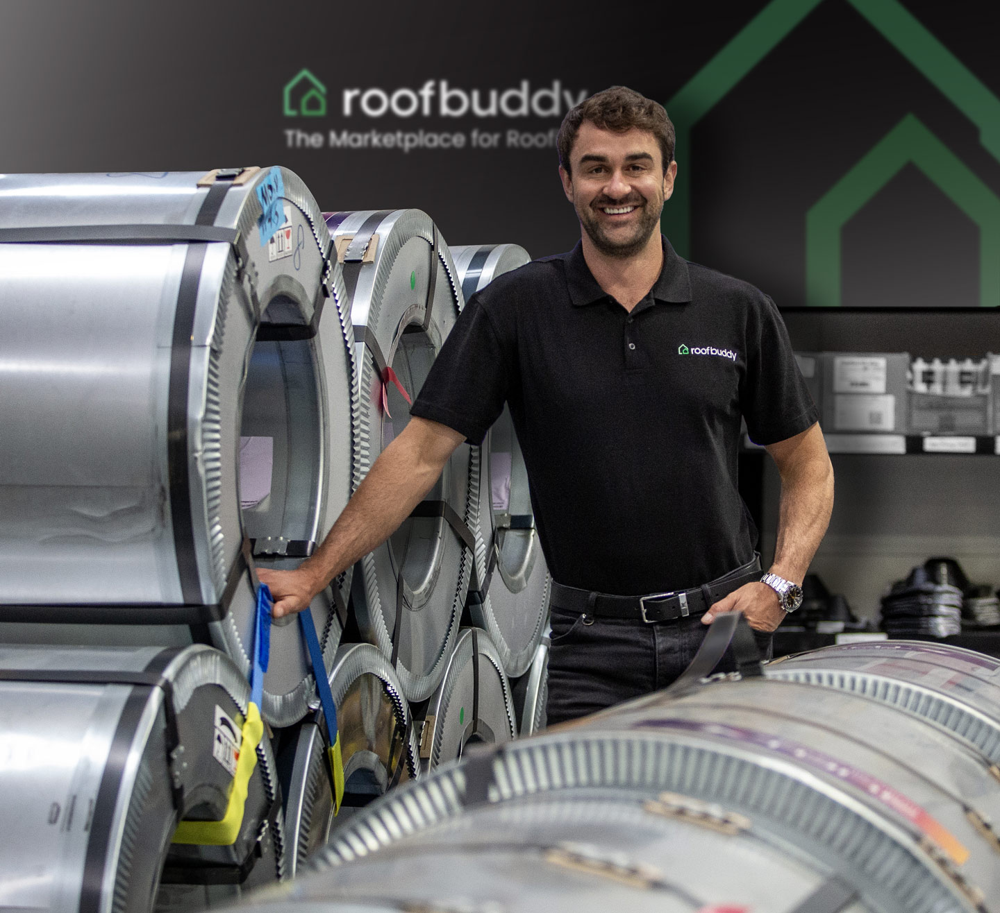
Welcome from
the founder.
Congratulations. You have made it into the team at Roofbuddy.
You are joining a team of people with common values, who work together to create the best possible working environment and client experience, improving our own lives and the lives of those around us.
We achieve this through creativity, ambition, mahi, and a positive working environment.
As one of our team members we expect that you will strive to always arrive on time, with a positive attitude and demeanour, ready to help create a world class sales and technology company.
At Roofbuddy we value positivity, creativity, ambition, and team work. By living and displaying these values you will contribute to the culture and success of Roofbuddy, and yourself.
Welcome aboard.
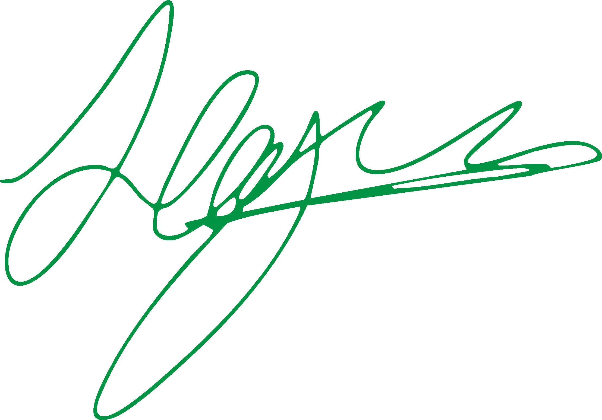
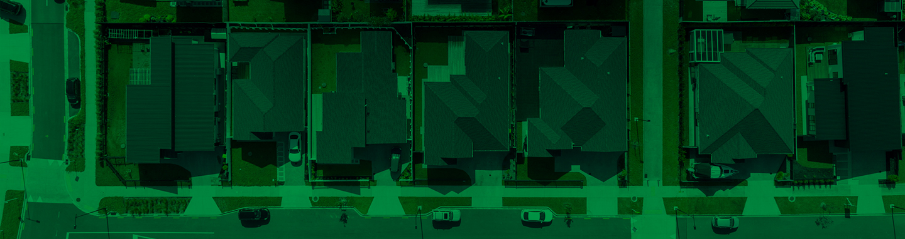
Who we are and why we exist.
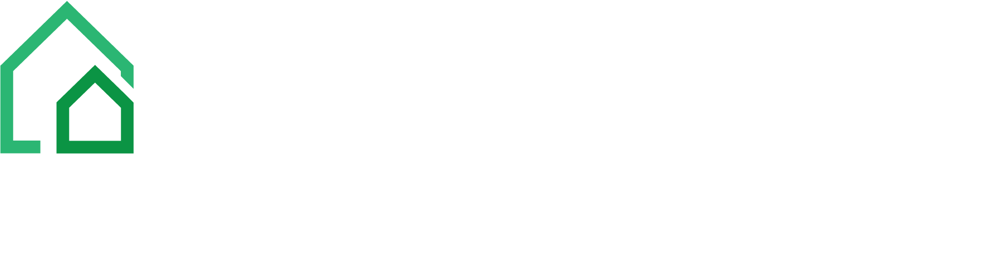
Roofbuddy Marketplace Metrics dashboard (current snapshot). Source: roofbuddy.co.nz.
1.1The founding premise.
Roofbuddy was founded in November 2021 in Auckland, New Zealand. The founding premise was straightforward: getting a good roofing quote in this country is harder than it should be. Homeowners ring around, wait for callbacks that don't come, receive quotes in formats that are impossible to compare, and eventually make a decision that's poorly informed because they have no independent reference point. They trust whoever showed up and sounded confident.
That's not a market. That's a gap.
The gap was infrastructure. There was no trusted, technology-enabled intermediary in the New Zealand roofing market. No single point of contact who could aggregate demand, vet suppliers, manage the quote process end to end, and stand behind the outcome. Roofbuddy was built to fulfil that marketplace function and occupy that middle ground.
The company's own summary of its position: "The greatest roofing, sales, tech, pricing aggregation company in New Zealand." That's not boasting. That's a category claim. There is no direct competitor doing what Roofbuddy does at this scale anywhere in the world.
1.2The market opportunity.
New Zealand has approximately 2 million residential homes. Every roof needs replacing roughly every 50 years. That's 40,000 reroofing jobs per year, systemically, just from the baseline replacement cycle, before you factor in storm damage, insurance claims, property sales, or deterioration. The volume is enormous and it replenishes itself continuously.
What was missing wasn't demand. What was missing was a company willing to organise the supply side, apply technology to the matching process, and take responsibility for the outcome rather than simply referring and walking away like other platforms and directories.
Roofbuddy works with over 100 roofing companies throughout New Zealand. The company doesn't just match homeowners to roofers. It provides independent advice, manages the quote process, conducts third-party quality assurance on completion, and backs the entire transaction with a Customer Warranty of up to $50,000 if a roofer fails to complete. That warranty is not a marketing line. It has been activated. The Laken Wahene case, which you will encounter in your training, saw a roofer go out of business mid-job. Roofbuddy activated the guarantee, brought in new roofers, and completed the job. The client's outcome was protected. That is the product.
Full Customer Warranty terms are published at https://roofbuddy.co.nz/customer-warranties. Know where they live so you can point a client to them in a conversation.
1.3What we do for our two customers.
Roofbuddy serves two customers simultaneously. This is important to understand because it shapes how you talk about the company and the service.
For homeowners
The client gets three to four comparable quotes from vetted roofers. They get independent advice throughout the process, which means someone in their corner who isn't trying to sell them a particular roofing product. They get a single point of contact, so they're not chasing multiple service providers. They get third-party QA on completion. They get the Customer Warranty assuring the quoted works completed at the quoted price if the service provider is unwilling or unable to complete the job.
What that means in practice: they don't have to become a roofing expert to make a good decision. We do the expert work on their behalf.
For roofers in the network
Roofers in the Roofbuddy network receive qualified leads. These are homeowners who have already expressed genuine intent and been screened and had their requirements fully specified. The roofer's cost to market drops. They don't waste time on information-gathering enquiries or price checking on time consuming quotes. They arrive at jobs where a real scope of work exists and a real decision is being made. They also benefit from network vetting: being part of the Roofbuddy marketplace signals to the market that they've been assessed and approved. That protects their reputation.
"We make roofing easy." That's the company tagline and it's the product from the client's perspective. Everything in your role as a consultant should serve that statement.
1.4The numbers behind the company.
The current state of the marketplace, drawn from the CRM dashboard:
- $100,612,229.92 marketplace revenue transacted on the Roofbuddy platform
- 45,069 unique marketplace enquiries to date
- 48,641 quotes generated through the platform
- 4,723 confirmed orders
These are not projections, these are real transactions that have moved through the Roofbuddy marketplace. The order figure validates the model: clients are trusting the process with large, high-stakes purchases, because the process earns that trust. Every lead that lands in your pipeline has real marketing investment behind it. Treat it that way.
1.5Recognition.
The market has noticed what Roofbuddy has built. In 2024, Roofbuddy won three awards at the 2degrees Auckland Business Awards, powered by Auckland Business Chamber: Excellence in Innovation award, Supreme Business Excellence award, and Best of the Best, Excellence in Innovation award.
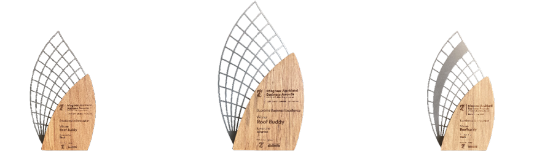
In 2025, Roofbuddy was a Finalist in the NZ Hi-Tech Awards.
These awards matter because they come from external evaluators with no stake in the company's success. They reflect what the judges found when they examined the business: a genuine innovation in a traditional industry, executed at a level that competes with the best businesses in Auckland.
Google Business Profile, current snapshot: 4.7 stars across 433 Google reviews. Real homeowner reviews are part of the credibility infrastructure. When a client questions whether Roofbuddy is legitimate, the review base is a fast, public proof point. Refer them to it.
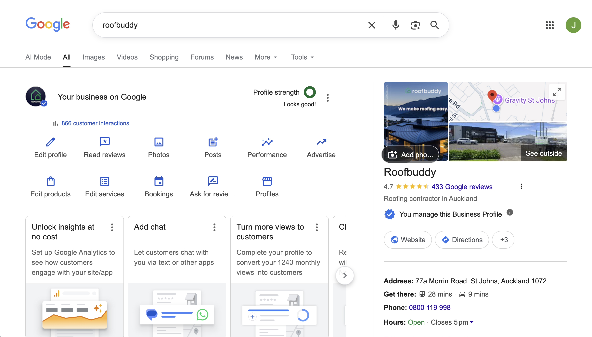
1.6The vision: Where we are going.
Roofbuddy is in growth phase. The New Zealand roofing market is the foundation, but the vision is multinational and multicategory expansion. Each new market is a replication of the infrastructure that has already been proven in New Zealand in the roofing market. Beyond geographic and category expansion, the company is building toward a SaaS model where we share our capabilities and tools with other eligible companies in NZ and abroad.
You are joining this company at a point where the model has been proven and the expansion has begun. That is a specific moment in a company's life. The people who join during this phase are not inheriting a finished system, they are building one.
1.7The company values.
The company's six values are: Morale, Performance, Ambition, Accuracy, Continuous Improvement, Esprit De Corps.
Read those carefully, they are not aspirational statements. They are descriptions of how this team is expected to operate day to day.
Morale is the foundation. Sales is hard — the team that maintains morale through difficulty outperforms the team that doesn't. Performance follows morale, not the other way around.
Performance is the output that everything else exists to produce. We are measured on results — deals closed, pipeline worked, clients served well, 5 star reviews submitted, runs on the board — not effort or intention. Performance means owning your numbers honestly, holding yourself to a measurable standard and delivering consistently in all conditions. The systems in this manual exist to make performance repeatable and inevitable; not accidental or occasional.
Ambition means hunger for more, applied honestly to your own results. Not envy of someone else's number. Hunger for your own next milestone.
Accuracy is the operational standard. Wrong specs, wrong measurements, wrong follow-up times all kill deals and damage relationships. Accuracy is not pedantry, it is professionalism.
Continuous improvement is the orientation. The 1% improvement principle: small, repeatable improvements compound over a full year into a measurably different consultant. Not transformation, not overnight identity change. Steady gain in how you do every interaction — iterate and learn from your mistakes, that's how we built this business.
Esprit de corps is the team posture. You are not in the field alone, you are part of a unit and we are special. Other consultants are not your competitors, they are your colleagues, mentors, trainees and friends. Help and be helped, in both directions.
1.8Subsidiaries and team footprint.
The people at Roofbuddy.
On day one you will not know who does what or who to talk to about what. The org chart below shows the structure of the group across all three companies — Roofbuddy, Guardian Seal, and Guardian Steel — and where you sit in it.
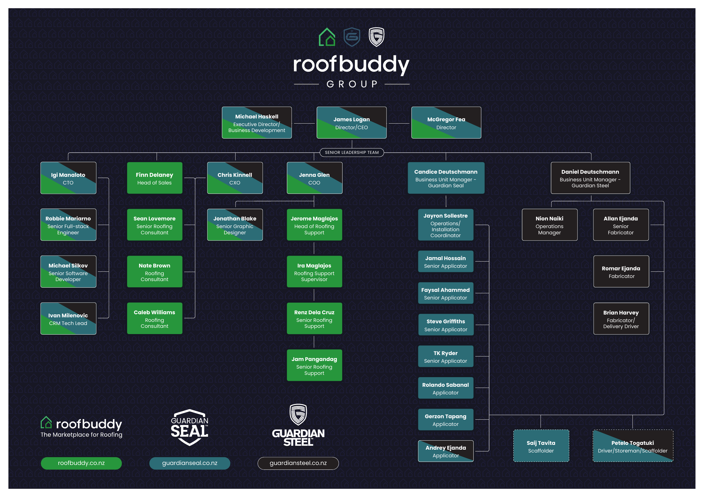
The board of directors is: James Logan (Director/CEO), Michael Haskell (Executive Director/Business Development) and McGregor Fea (Director).
The senior leadership team is: Igi Manaloto runs technology as CTO, Finn Delaney leads the sales team you will be joining, Chris Kinnell is CXO, Jenna Glen is COO, and the two subsidiary business unit managers are Candice Deutschmann (Guardian Seal) and Daniel Deutschmann (Guardian Steel).
As a consultant you will primarily work alongside Finn's sales group, with day-to-day operational support routed through Jerome Maglajos and the roofing support team under Jenna's function. Technical roofing questions, application work, and steel fabrication go to the relevant subsidiary team. Use the chart as a reference — over the first few weeks you will meet most of the people in it.
Roofbuddy operates two wholly owned subsidiaries: Guardian Steel and Guardian Seal. These extend the company's capability in specific roofing manufacturing and roof restoration categories. As a consultant, you don't need deep technical knowledge of each subsidiary at this stage, but you should know they exist and understand that the Roofbuddy offer is broader than a single product category. When a client's job requires something specific, the network and the subsidiary structure has been built to serve it.
Head Office is at 77a Morrin Road, St Johns, Auckland. The management and admin team is split between Auckland and abroad. The software development team operates across Auckland, Christchurch, Moscow and the Philippines. Consultants in the field are supported by the Sales Support Team (SST) based in the Philippines, who handle measurement diagrams, client communications, and operational tasks that free consultants up to focus on the high-value interactions. Chapter 12 covers how to delegate effectively to the SST.
1.9Who this handbook is for.
This manual is for people who have chosen to build a sales career inside a company that rewards skill, attitude, and effort in roughly equal measure. It is not for people who want a script to read from. Scripts are tools inside a larger system. The system is what you need to understand.
If you do the work in this manual, apply the framework consistently, and bring the attitude that the values section describes, you will close more deals than consultants who rely on charm or confidence alone. The framework is a multiplier on whatever natural ability you bring. The more you internalise it, the more it pays.
Read carefully. Practise relentlessly. This is not a one-time orientation document. Come back to it when you hit a wall. The answer to most sales problems is usually in here somewhere.
The 5-5-8 framework.
2.1Before the framework: Two principles.
Sales discipline is a deep, deep ocean. The framework in this chapter and the three that follow only scratches the surface, but if you learn it and practise it consistently, it will put you in the top 1% of direct salespeople in New Zealand. If you keep practising it across a career, it will set you up for a lifetime of success.
Sales people are made, not born - nobody walks into this role already great at it and nobody here has had that experience. The senior consultants you will meet at Roofbuddy were not naturally gifted at this on day one - they were committed enough to work the framework consistently for long enough to become excellent. The path is open to you. The work is the price.
A sales engagement should always feel natural but be structured - hold both of those at once. The structure is invisible to the client. What they experience is a calm professional who is easy to talk to and who guides them through a clear process. What is happening underneath is the framework, working as designed.
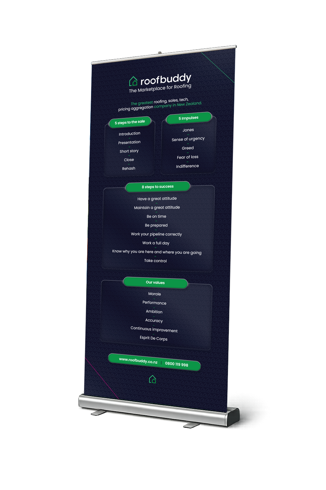
2.2The single organising architecture.
Everything you are taught at Roofbuddy fits inside one framework: the 5-5-8.
These three pillars are the architecture of your work. They are not separate training modules that you pick from depending on the situation. They are three interconnected systems that operate simultaneously at every appointment, every day. A consultant who understands only the 5 Steps but ignores the 5 Impulses and the 8 Steps will produce inconsistent results. A consultant who lives inside all three pillars and understands how they reinforce each other will outperform consultants with more natural ability who don't have the system.
This is worth sitting with. The 5-5-8 is not a formula where you follow Step A, then Step B, then deploy Impulse C. It's a mental model that shapes everything: how you prepare before an appointment, how you walk up to a front door, how you handle a hesitant client, how you talk about price, how you end your day. The pillars are always present.
2.3The 5 steps to the sale.
The 5 Steps are the sequential architecture of a sales appointment. They don't change. Introduction, Presentation, Short Story, Close, Rehash. Every appointment moves through these steps in this order. The pace varies. The content adapts to the client in front of you. But the structure is fixed.
Chapter 3 of this manual covers each step in depth, with scripts, mechanics, and worked examples. Read the overview here to understand the shape of the system before you go deep on each step.
The Introduction establishes the relationship before any business conversation happens. Trust is built here, or it isn't built at all.
The Presentation is where you explain the Roofbuddy process and identify the specific needs of this client. You're not presenting a generic pitch. You're presenting a service that solves their particular problem, which you discover by asking questions during this step.
The Short Story is a targeted credibility moment. You deploy a real example of someone in a similar situation whose outcome was protected by choosing Roofbuddy. It turns an abstract promise into a concrete reference point.
The Close is not a single moment at the end of the appointment. It is a posture that runs through the entire interaction, built through dozens of minor agreements, with the formal close arriving as the natural conclusion of a process the client has already been saying yes to.
The Rehash formalises the sale. You repeat the key points, confirm the next steps, and cement the client's confidence in their decision. This step prevents buyer's remorse and sets up the ongoing relationship.
2.4The 5 Impulses.
The 5 Impulses are the psychological levers that drive buying decisions. They are:
These are not manipulation techniques. They are accurate descriptions of why people make decisions. Understanding them makes you a better consultant because you can recognise which impulse is active for a particular client at a particular moment and speak directly to it.
Jones: The impulse to keep pace with neighbours, peers, and social reference groups. This is "keeping up with the Joneses" as a sales principle. It is especially powerful in established suburbs and neighbourhoods where community norms are visible and social comparisons are constant. When you use a Short Story about another client in a similar neighbourhood who had their roof done through Roofbuddy, you are activating the Jones impulse, you're normalising the decision.
Sense of Urgency: The impulse that responds to the recognition that delay has a cost. A roof that's deteriorating gets more expensive to repair every month it's left. Timeline slots with vetted roofers fill up. The sense of urgency is not manufactured panic, it's an accurate observation about a real situation.
Greed: The impulse toward value. Not in the negative sense, but in the accurate sense: clients want to feel they are getting the best possible outcome for their money. The Roofbuddy model delivers genuinely competitive quotes from a vetted network and that value proposition is real. Greed, here, is the client's entirely reasonable desire to not overpay, and perhaps get something they don't feel like they are supposed to have on top as a sweetener.
Fear of Loss: The impulse that responds to risk. The client who has heard about a roofer going out of business mid-job, or a roof that failed two years after installation, feels this acutely. The Customer Warranty up to $50,000 speaks directly to this impulse. The Laken Wahene case and the Mr Walton case (detailed in Chapter 3) are your most powerful tools for activating and then resolving fear of loss.
Indifference: This is a professional posture, not a genuine attitude. A consultant who projects complete comfort with a client not proceeding is a consultant who does not appear desperate. Desperation kills deals. Calm, confident indifference creates a psychological dynamic in which the client is more, not less, inclined to trust your recommendation. You care about their outcome. You do not need their business.
2.5The 8 steps to success.
The 8 Steps are the behavioural and attitudinal standards that govern how you operate as a professional. They are:
2.6How the three pillars interact.
The 5 Steps tell you what to do and when to do it. The 5 Impulses tell you why clients decide. The 8 Steps tell you how to operate as a professional regardless of the appointment you're in. A consultant operating well is using all three at every appointment and in every aspect of life.
Worked example. You're walking up to a property. The 8 Steps frame your attitude (positive attitude, maintained), your preparation (you've reviewed the lead), and your punctuality (you're three minutes early). The 5 Steps frame the structure you're about to follow (Introduction first). The 5 Impulses are running in the background - you're already noticing the roof on the neighbour's house is new (Jones cue), you're carrying the right energy for Sense of Urgency, and the warranty story is queued up for Fear of Loss if it's relevant.
You don't think about each pillar separately, the framework becomes the way you operate. That's what mastery looks like and it takes years of practice to get there. The good news is that it's fun too. The reps you put in during your first 90 days are the foundation for everything that follows.
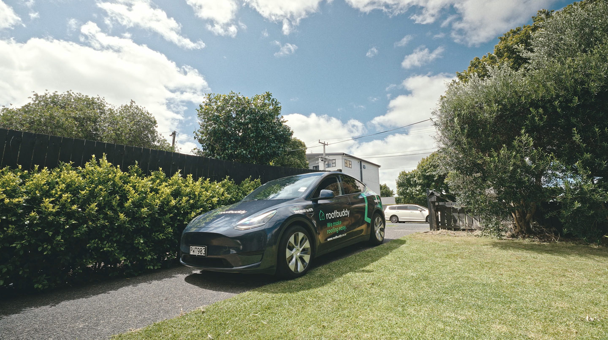
The 5 steps to the sale.
This is the deepest chapter in the manual. The 5 Steps are the architecture every appointment follows. Read it carefully then read it again. Come back to it after every appointment that didn’t go the way you wanted, because the answer to what went wrong is almost always somewhere in these pages.
3.1Step 1: Introduction - Build rapport and set the agenda.
The Introduction begins two blocks out from the house. That is not a figure of speech or theoretical, it is operational. The block before you arrive is where you decide what kind of consultant is about to walk up to that door. The client doesn’t see that decision being made. They see its consequence: the energy, the calm, the warmth, the focus you carry when they open the door.
The first 10 seconds.
The first impression is being made before you’ve finished introducing yourself. The client is reading you against expectations they had before you arrived: did you turn up on time, are you presentable, do you sound like a professional or do you sound like a salesperson? The first 10 seconds set the frame. Lose them and the whole appointment is uphill. Win them and the rest is much easier.
Specifically: arrive a few minutes early but knock at the agreed time. Stand back from the door so you don’t crowd it. Smile genuinely, not performatively. Introduce yourself by name, name the company, name the reason you’re there and wait to be invited in.
SEX - Smile, Eye contact, eXcitement.
The internal training acronym for what you bring through the door. Smile, eye contact, excitement. The deliberately memorable framing: we want to have sex with all our customers as soon as we meet them, 100% of the time. Crude, intentionally unforgettable, and exactly accurate to what is being asked of you in the first 23 seconds - a genuine smile, present eye contact and visible enthusiasm.
Get all three right and the appointment is half won before you have said anything substantive. Miss any of the three and the client is reading reluctance, distance, or disinterest before the conversation even starts. The three are not difficult individually but the discipline is doing all three on the worst day of your week as well as the best.
Who you are, what you’re doing here, why we’re talking.
Three pieces of information the client needs in the first 60 seconds, in plain language. Who you are (your name, Roofbuddy). What you’re doing here (the appointment context - they enquired about a roof and you are here to walk through it with them). Why we’re talking (a brief framing of the next 30 to 45 minutes so they know what to expect). Get all three on the table cleanly and move on.
Finding common ground.
Before any business conversation, find something genuine to connect on. The car in the driveway, the dog you can hear, the view from the front door, the renovation work obviously in progress, the artwork in the entryway. This is not a tactic. It’s the basic act of acknowledging the human being in front of you before you start talking about their roof.
Take a beat and don’t rush this, enjoy it - meeting new people should be fun. The client is also calibrating to you and if you barrel into the business conversation in the first 30 seconds you have communicated that you’re here to extract, not to help and connect.
Sell yourself - talk about something other than the product.
Spend a minute on you, the person, not the product. Where you’re from and how long you’ve been doing this. Something authentic that gives the client a sense of who they are dealing with as a human being. The client is not just buying a roofing service - they are buying you, the consultant, as their guide through the process so make yourself visible early. Then the rest of the appointment runs through a trust relationship rather than a transactional posture.
Mindset prep.
Walk in believing you are here to solve their problem. Not to make a sale - to solve a problem and help navigate a complex purchasing decision. The two are aligned but the mental frame matters. If your mental frame is “close this client”, the client feels it. If your mental frame is “understand this client’s situation and figure out the right answer for them”, the client also feels it so lead with the second one.
Common introduction mistakes.
Talking too much. The client is the one who lives in this house so let them tell you about it. Asking the right questions in the first ten minutes signals competence. Telling them what their problem is, before you’ve heard them out, signals arrogance. You’ve got two ears and one mouth, that’s about the right ratio.
Rushing past the rapport step because the day is busy. There’s always a temptation to compress the Introduction because you’re running late or because you’ve got three more appointments. Don’t. The Introduction is the foundation. Compromise it and everything else takes longer or fails entirely.
Treating the Introduction as small talk to get through - it’s not that. It’s the moment trust is built or not built so be completely present and attentive.
3.2Presentation - Collect information and educate to motivate.
SPIN questioning.
The Presentation is structured: you cover the Roofbuddy process, you identify the client’s specific needs, you connect features to their benefits, and you set up the close that’s coming. SPIN is the questioning discipline that drives the needs-identification work: Situation, Problem, Implication, Need-payoff. You ask questions that establish the Situation (how long they’ve been in the house, what the roof has been like, what’s prompted this conversation), surface the Problem (what specifically is bothering them, what they have noticed, what they are worried about), draw out the Implication (what happens if this is not addressed - costs, risks, disruption, lost time), and lead them to articulate the Need-payoff (what they would want from a good outcome).
Done well, SPIN feels like a conversation, not an interrogation. The client is doing most of the talking. You are doing most of the listening. By the time you have asked through Situation, Problem, Implication, and Need-payoff, the client has effectively told you why they should buy from you - and just as importantly, has said it out loud to themselves.
The questions you ask in the Presentation are doing work even when they feel like ordinary conversation. Each one is gathering intel and qualifying. “How long have you been in this house?” tells you about their attachment and their timeline. “Have you had any roofing work done before?” tells you about their experience and any baggage they’re carrying. “What made you reach out now?” tells you what’s driving the inquiry - leak, sale, insurance, deterioration, neighbour’s roof going up. Each answer shapes the rest of the appointment.
Building value.
The value of the Roofbuddy process can be communicated through five words, use them:
Multiple: You’ll get three to four quotes, not one. You can’t make this decision with one quote - there’s too much variance in roofing pricing and product specification.
Comparable: Every quote is built off the same spec, so you’re comparing like for like. Without that, comparing quotes is impossible.
Competitive: The roofers know they’re competing. That changes the pricing they put forward.
Specific: The quotes are specific to this property, this scope, this condition. Not generic estimates.
Vetted: Every roofer in the network has been checked for LBP certification, public liability insurance, solvency, and on-going performance through the work they’ve done for us.
Walk through those five words and the client understands why Roofbuddy exists and what they’re getting.
Identifying needs.
The Presentation is also where you identify what this specific client actually needs. Sometimes the inquiry says “reroof” but the real need is a repair followed by a coating. Sometimes the inquiry says “leak” but the roof is past its life and a reroof is the right answer. Listen carefully. The client may not know what they need, and they’re relying on you to figure it out.
Setting up the close.
The Presentation is where the close starts being built. Every “yes”, every nod, every agreement on a feature or a benefit is a minor close. You’re building the pattern that ends in the formal close. By the end of the Presentation, the client should have agreed, explicitly or implicitly, that the problem you’re describing is their problem, and that the process you’re describing is the right way to solve it.
Creating comfort.
The Presentation must leave the client feeling comfortable about what happens next. A client who understands the process is a client who can say yes to it. Confusion produces hesitation and FUD (Fear, Uncertainty and Doubt). Clarity produces movement and moves people to a decision promptly.
Walk them through the next steps explicitly. What happens after this appointment. When they’ll hear from roofers. What the quotes will look like. How the QA works. When the warranty kicks in. Remove every uncertainty you can remove, because every uncertainty is a reason to pause.
3.3Step 3: Short story - make it real.
The Short Story deploys after you have received clear positive signals in the Presentation. The client has engaged. They’ve answered your questions. They’ve agreed, explicitly or implicitly, that the problem you’re describing is their problem. Now you give them proof that the solution has worked for real people in situations they recognise.
The purpose of the Short Story is to build credibility and emotional connection simultaneously. The credibility comes from the fact that a real person had a real outcome through Roofbuddy. The emotional connection comes from the similarity between that person’s situation and this client’s situation. When the client sees themselves in the story, they don’t just hear about a solution. They imagine themselves experiencing it.
The verbatim definition from training: “A short story is just expanding beyond anything that you’ve seen in the presentation. It’s really congealing what you’ve said and giving them an example of how this service, this product, this offering has worked for somebody in particular.”
The word “congealing” is precise. The story takes everything fluid from the Presentation, the features, the benefits, the needs you’ve identified, and solidifies it into a single human example. After a good Short Story, the client’s question is no longer “will this work?” It’s “which roofers am I going to get?”
Story structure.
A Short Story has three parts. The client in the story had a problem similar to this client’s problem. The Roofbuddy process addressed that problem with a specific outcome. The client in the story is now satisfied.
The structure is simple because the story needs to be easy to follow and emotionally resonant. Complexity undermines both goals. Keep the story specific, keep it human, and land clearly on the outcome.
The core story bank.
Mrs Wiggins: A client who had the same type of roof issue as the person you’re now sitting with. She went through the Roofbuddy process, received three competitive quotes, selected an excellent company at a strong price, had the roof replaced and is now entirely satisfied. The Mrs Wiggins story is a clean positive example, appropriate for clients whose primary concern is whether they’ll actually get quality roofers at competitive prices.
Mount Eden Road, Rene: A client who went through the full Roofbuddy process from beginning to end, with the same result. This story is useful when the client is familiar with Mount Eden Road or similar established Auckland suburbs, because it grounds the story geographically and makes the social proof more proximate.
Annalese: A client who came to us and went through the process, receiving four quotes including one from Mac Roofing. The competitive comparison made the decision easy and the job was completed well. The Annalese story is useful when a client is wondering whether the quote process actually delivers competitive options.
The Laken Wahene case (warranty activated): This is the most important story for clients whose primary concern is risk. Laken Wahene was a roofer in the Roofbuddy network who went out of business mid-job. Most clients, when you describe this scenario, will immediately imagine what that means: a half-finished roof, money spent, no recourse, a dispute that drags on for months or longer. But that’s not what happened - Roofbuddy activated the Customer Warranty and new roofers were brought in from the network. The jobs were completed and the client’s outcome was protected.
The Laken Wahene case is proof that the warranty is not a marketing line. It has been used in exactly the circumstances it was designed for. Clients who are risk-averse respond powerfully to this story because it takes the worst-case scenario they’re imagining and demonstrates that Roofbuddy had already planned for it.
The Mr Walton case (the cost of delay): Mr Walton is a client in Cambridge who intended to go ahead with a reroof but delayed too long. Six months later the entire roof collapsed and the remediation cost over $100,000. This story is the consequence of not acting - a decision to wait has consequences too. It is not told to frighten the client, it is told to make the stakes real. Use it when the client is leaning toward proceeding but is suggesting they’ll “think about it for a few months” - the cost of that delay is what Mr Walton paid.
The Bonnie case (cautionary tale about going around Roofbuddy): A client decided to deal directly with a roofer they had met through Roofbuddy. The roofer had completed many jobs for us over time but had recently been showing signs of overload - communication slipping, lead times stretching. We had stopped feeding them new jobs as a result. The client went around the network anyway, paid a 50% deposit direct and the roofer didn’t deliver. They were left without a roof and without their deposit. This story is for the client who is wondering why they need Roofbuddy at all if the roofers are reliable. The answer: the discipline of the network is the whole reason the outcomes are reliable.
Jones theory in practice.
The Jones impulse (keeping up with the neighbours) is directly activated by Short Stories, particularly stories that reference recognisable areas or social contexts similar to the client’s. “Your neighbours are getting roofers interested” is the explicit language, but it runs through every story you tell about someone in a similar situation.
When you’re telling the Mrs Wiggins story to a client in an established suburb, you are implicitly saying: people like you, in houses like this, in streets like yours, have already used this service. You are not the first. The process is known and trusted. The Jones impulse responds to normalisation: if people like me have done this, it’s safe to do it too.
This is why specificity in your stories matters. A vague story about “a client” activates nothing. A story about a specific person with a specific situation activates recognition and resonance. Use names. Use locations where appropriate. Make the person in the story real.
Common mistakes with the short story.
Deploying it too early. The Short Story is designed to consolidate positive momentum that already exists. If you tell a story before the client has engaged with the Presentation, before they’ve agreed that their problem is real and the solution is relevant, the story lands in neutral. You’ve told an anecdote. You haven’t moved anything.
Using the wrong story for the client’s concern. A client whose primary concern is price should hear the Mrs Wiggins or Annalese story with emphasis on the competitive quotes. A client whose primary concern is risk should hear the Laken Wahene case. A client wondering whether they should just deal direct should hear the Bonnie story. A client leaning toward delay should hear the Mr Walton case. Read the client correctly and select accordingly.
Telling the story without connecting it back to the client’s specific situation. Every story needs a bridge: “And actually, your situation is very similar to hers.” Without the bridge, it’s just a story. With the bridge, it’s proof that this process will work for this client.
Making the story too long. “Short” is in the name. The story should be compressed and targeted. If you’re still telling the Laken Wahene case five minutes later, you’ve lost the momentum the story was supposed to create.
3.4Step 4: The close - Obtain agreement.
The close is not a moment at the end of the appointment. That is the most important thing to understand about Step 4 - the close is a posture. It runs from the Introduction through the Rehash. Every minor agreement you build, every affirmation you receive, every question the client answers in a way that confirms their need is a close. By the time you arrive at the formal close, the sale has already happened. The ‘green light’ is the confirmation, not the event.
The mechanics of minor closes.
A minor close is any small agreement, spoken or unspoken, between you and the client. A nod. A “yes.” A “that makes sense.” An “exactly.” Every one of these is a yes in the pattern of yeses that leads to the final yes. The goal, stated in the training material, is fifteen or more minor closes built through the Introduction, Presentation, and Short Story before the formal close arrives.
The verbatim training language on this: “If we’ve gone through three steps here, introduction, presentation, short story, and we’ve used 15 minor closes where they’ve agreed and we’ve agreed on a point in the positive, in the affirmative, four qualifications, don’t they? Roofbuddy’s QA service after we’ve finished installing the roof would give you a good level of assurance that the job’s been done correctly, wouldn’t it?”
The structure of the minor close is always a question that invites an affirmative answer. “Doesn’t it?” “Wouldn’t it?” “Don’t they?” These are not high-pressure devices. They are gentle invitations to confirm something that’s already true. The client agrees because they agree. You’re surfacing the agreement that’s already there.
The money conversation.
Be comfortable with money. Every consultant who is uncomfortable talking about price communicates that discomfort to the client, and the client mirrors it. Their question becomes “is this too expensive?” when your nervousness suggests it might be.
Be matter-of-fact. Roofing is expensive. A reroof is a significant investment. The client knows this before you arrive. Pretending otherwise undermines your credibility. The professional move is to acknowledge the cost directly and explain the value clearly.
When the price comes up, slow down rather than speed up. Speeding up signals you’re trying to push past the price. Slowing down signals you’re confident in it. Walk the client through what they get for the money - the multiple quotes, the vetting, the QA, the warranty, the support - and let the price settle into context.
Final close mechanics.
The formal close is the natural conclusion of the pattern you’ve built. It’s not a high-pressure ask. It’s an invitation to confirm what’s already been agreed.
The assumptive close is the clearest expression of this. Rather than “would you like to proceed?” - which invites the answer no - you ask something that assumes proceeding and offers a choice within it. “Are Tuesday or Thursday better for the install team to come and measure up?” “Will you be making the deposit tonight or tomorrow?” The client picks one. The sale is closed.
Multiple closes inside the same close moment. The training language: “How does that sound? You happy with that? Should we go ahead and get that locked in for you? Shall we get the wheels on that for you?” Each of those is a minor close that becomes the actual close as it accumulates.
Buddy Pay: The finance close mechanic.
Buddy Pay is the company’s interest-free finance product. It appears on every quote the client receives. The client can toggle between three terms - 6 months, 12 months, or 18 months interest-free - and the system calculates weekly, fortnightly, and monthly repayments on the screen in real time. There is also a more-info button that takes them to the full terms.
Knowing how to introduce Buddy Pay turns a category of clients you would have lost into clients who proceed. The clean alternative close that Buddy Pay creates: “Do you have the money for this, or would you like to take advantage of the interest-free finance?” That question reframes the conversation. The client is no longer choosing between yes and no. They are choosing between two ways of saying yes.
How to present it: do not lead with finance. Quote the cash price and explain what they get. Then offer Buddy Pay as the second path if the signals suggest it may be well received. “The cash price for this is X. If you’d prefer to spread it over 6, 12, or 18 months interest-free, we can do that too. Have a look at the repayment numbers and tell me which works for you.” The client interacts with the calculator on the quote page themselves and the numbers tell the story.
The legal nuance to understand and respect: the cash price and the finance price are the same price. You cannot offer a discount on the cash version after the client has accepted the finance version. That breaks the interest-free framework and creates legal exposure. If a client asks for a cash discount because they’ve seen the finance option, the answer is that the price is the price; the finance is genuinely free, paid for by the credit provider. You can offer a small discount only as a separate negotiation, on the actual transaction price, and then the financing recalculates from that adjusted base. Be careful with this conversation. People will try to extract a discount and the finance offer at the same time.
Why take every Buddy Pay deal you can: once the finance is approved, Roofbuddy gets paid the full amount immediately. There is no sticky final invoice. There is no chasing a client three months after install for the closing balance. The credit provider handles all of that. From a cashflow and risk perspective, a Buddy Pay deal is the strongest version of a close.
Buddy Pay is also useful as a way to break the perception barrier on a large purchase. A $48,000 reroof feels like one number. The same job at $620 a month for 18 months feels different. You’re not changing the price. You’re changing the frame the client uses to evaluate the price. Some clients will see the monthly number and proceed who would have hesitated on the lump sum.
Indifference at the close.
Closing with indifference is one of the most counterintuitive but powerful techniques in the toolkit. Once you’ve made your case, asked your questions, told your stories, presented your options, the close is just an invitation. You don’t need this client but you would like to find out what it takes to earn their business. You care about their outcome, you’d love to work with them, but you don’t need them. That posture, communicated through your body language and language choices, creates a vacuum that the client often steps into.
The phrase that captures this: “Look, it’s entirely up to you. I just wouldn’t want you to miss out on that March slot because they do go fast this time of year. But really, whatever works for you.” Indifference wraps the Fear of Loss. The client gets the information and they feel the weight of potentially missing out. But they do not feel pushed and the decision feels like theirs.
3.5Step 5: Rehash - Stick the landing.
Rehash is the consolidation step. Tell them what you told them - emphasising the key points. Outline next steps with specific timelines and repeat the most important commitments.
This step matters more than it looks. The Rehash prevents buyer’s remorse and cognitive dissonance - the cooling-off feeling that hits a client between deciding to proceed and the work starting. A clear Rehash with specific commitments locks the decision in place and buttons up the sale.
The structure: “So just to confirm what we’ve agreed: you’re going to receive three to four quotes by [day]. They’ll all be on the same spec so you can compare directly. You’ll have me as your single point of contact. Once you choose a roofer, the deposit is X. The work starts roughly Y weeks after that. The QA happens on completion. The warranty kicks in. Is there anything that’s still unclear for you?”
Ask for the reference site.
While the client is fresh on the decision and feeling positive, ask if you can use their property as a reference site once the job is complete. “Once your roof is on and you are happy with it, would you be open to us taking some drone shots to see the finished result?” Most clients say yes. A small number say no. Both answers are useful information.
A reference site is a real, visible, recent installation in a recognisable neighbourhood that you can point future clients toward, it is one of the most powerful pieces of social proof available to a consultant. Over a 12-month period, asking this question of every closed client builds an asset bank of reference sites across the regions you work. Future Short Stories become more concrete. Future Jones-impulse moments become more credible. The client also feels good about being asked - it signals that you expect their outcome to be excellent.
Close on a high.
End the appointment with energy and confidence, not relief. “Brilliant. I’ll get those quotes coming through to you. Speak soon.” The last impression matters as much as the first. Leave them looking forward to the next step.
3.6Putting the 5 steps together.
The 5 Steps are sequential but they’re not separate compartments. A skilled consultant moves through them smoothly, with the client barely noticing the structure. The structure is doing the work underneath the conversation.
As a new consultant, focus on getting the structure right at first. Hit every step and don’t skip the Short Story because you think the client is already convinced or the Rehash because you’re running out of time. The structure is what produces consistent outcomes and as you get more reps, the structure becomes invisible. It becomes how you talk and communicate in all areas of life.
Re-read this chapter when an appointment doesn’t go the way you wanted. The diagnostic is almost always somewhere in here: you compressed the Introduction, you skipped questions in the Presentation, you used the wrong story, you got tentative at the close, you rushed the Rehash. Find the step that broke and rebuild the muscle for next time.
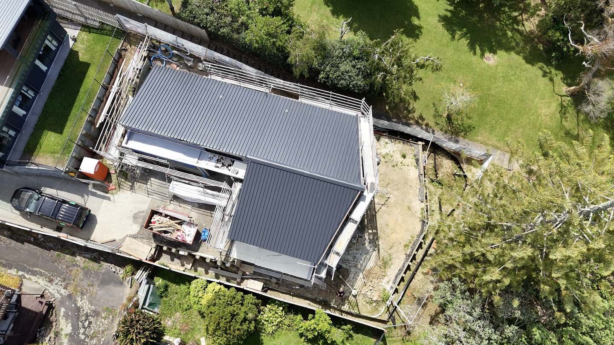
The 5 impulses - Persuasion.
The 5 Steps tell you what to do and when to do it, like recipe; the 5 impulses is the seasoning that makes the food appetizing.
Every sale has a psychological layer underneath the mechanics; the steps are the skeleton and the impulses are the nervous system. A consultant who knows the steps but does not understand the impulses can run a technically perfect appointment and still not sell, because they do not know what is actually driving the client toward or away from a decision. A consultant who understands the impulses can read the room, deploy the right tool at the right moment and guide the client to a confident yes without ever feeling pushy.
Why the impulses work: The Lizard Brain.
Human beings are impulsive creatures that have inherited a set of mental traits that were bred into us over millions of years of evolutionary history. The old brain - sometimes called the lizard brain - quickly assesses situations to determine if you are at risk or in danger. If it senses your wellbeing is in jeopardy, it forces you to react and move away from the potential threat.
To shift a client from the status quo, you have to wake the old brain by showing them how their current position is untenable, unsustainable, or unsafe. The 5 Impulses are the levers that talk directly to that older, faster, more emotional part of the decision-making system. They work because they are not arguments - they are reactions that have been hardwired across deep evolutionary time. Understanding them is not cynical - it is the honest discipline about how human beings make decisions.
These are not tricks, they are real human motivations that exist in every person before you ever knock on the door. Your job is to recognise them, meet them, and channel them.
The five impulses, in order:
Learn them in this order, practice them in this order and build them into your daily lexicon.
Impulse 1: Jones.
The full name is the Jones Effect, keeping up with the Joneses. It is the oldest social pressure in the book and it works because it is wired into human beings at a level that is almost impossible to reason your way out of.
People watch their neighbours and peers, they compare their home to the homes on either side and across the street and notice when someone gets a new fence, a new car, a new roof. They feel the pull to keep pace, to not fall behind, to not be the house on the street that looks tired while everyone else looks sharp. This is not vanity, it is a deep-seated tribal instinct about belonging and status.
In roofing, the Jones Effect is unusually powerful for three reasons. First, a roof is one of the most visible parts of a house - you cannot hide it and everyone who drives past can see it. Second, roofs last 30 to 50 years so a decision made today signals to the street for decades. Third, roofs in established neighbourhoods tend to be similar in age because the houses were built at the same time. If one owner is thinking about their roof, there is a very good chance the three houses either side have the same underlying issue.
How you apply it in the field starts before you say a word. When you walk up to a property, you are already gathering information. If the roof on the left and the roof on the right are clearly newer, you note that. If you have done three jobs in the same street in the past year, you know it before you arrive. When you reach Step 3 of the sale and you are building stories, those stories should include specifics from the same suburb, the same kind of neighbourhood, ideally the same street.
“We’ve been really busy in this area. Mrs Wiggins just around on Kauri Road had hers done last month and she’s absolutely stoked with how it looks.” That is the Jones Effect in action. You are not pressuring the client, you are giving them information that speaks directly to an impulse they already have and trust that they can feel the pull.
The language signals for Jones are social and specific. You are not talking about roofing in general, you are talking about what is happening on this street, in this neighbourhood, among this person’s peers. “Your neighbours are getting roofers interested.” “This suburb has been one of our busiest.” “These houses were all built around the same era, so we tend to find them coming up at similar times.”
The key rule: be specific. “Lots of people are doing it” is weak. “We did four roofs in the three streets around you last year and two more booked this season” is strong. Specific information activates the impulse, vague generality does not.
Impulse 2: Sense of urgency.
Sense of Urgency is about energy, pace, and momentum. It is the feeling that things are moving and this is the time to act. It is not about a specific constraint disappearing - that is Fear of Loss and it is different. Sense of Urgency is the underlying current that makes the client feel like the right time is now.
The distinction matters because the two impulses are taught separately and deployed differently. You can have Sense of Urgency without any specific deadline. You can have Fear of Loss without high energy. Confusing them leads to using the wrong tool at the wrong moment.
Sense of Urgency lives in how you carry yourself. It lives in your language, your pace, your confidence. A consultant who speaks slowly, hedges constantly, and takes ten minutes to get to the point is communicating the opposite of urgency. The client mirrors that energy - they slow down, they delay, they say they need to think about it.
A consultant who walks in with clear intent, speaks with direction, and treats the appointment as something that matters right now is communicating urgency without saying a word about deadlines.
The language patterns from training are instructive. Words and phrases that carry urgency: “as quickly as you can,” “today,” “now,” “immediately,” “we’ve been going gangbusters,” “lead times are pushing out fast,” “lots of people calling,” “it’s all going on really quickly.” These phrases transfer a feeling - they create momentum and tell the client that something is happening and they are in the middle of it.
A phrase that captures this precisely: “We’ve taken on lots of new business. Lead times are pushing out fast. Let’s get this sorted for you quickly.” That sentence does not threaten anything. It does not say the price goes up or the slot disappears. It simply communicates that the world is moving, things are busy, and the time to act is now. That is pure Sense of Urgency.
When does it fail? It fails when it feels manufactured. If a consultant has been sitting around doing nothing for three days and walks into an appointment talking about how insanely busy they are, the inauthenticity leaks through. Sense of Urgency has to be real, or at least plausible. When the business genuinely is busy, lead times genuinely are stretching, and demand genuinely is high, this impulse is easy to activate because you are simply telling the truth with energy.
It also fails when it is the only tool being used. Urgency alone, without grounding it in the client’s specific situation, without the relationship of Step 2, without stories, without Fear of Loss or Indifference to balance it, becomes pressure and pressure creates resistance.
Use urgency as a current underneath the whole appointment, not as a closing line you pull out at the end.
Impulse 3: Greed.
The definition of Greed in this context is precise: getting something you are not supposed to have. The entire mechanic is exclusivity. If everyone can get it, it is not Greed. The moment something becomes widely available, the impulse dies.
This is the impulse of the special access, the queue-jumping arrangement, the thing made available to this client specifically that is not normally on offer. It speaks to the part of every human being that wants to feel like they won. Like they got the better end of the deal. Like they are one of the few, not the many.
In a Roofbuddy context, the cleanest expressions of Greed are situational and specific:
- Opportunity to work with a roofer who does not usually take jobs of this size.
- Opportunity to get a particular roofer’s senior project manager on the install rather than a more junior PM.
- Opportunity to jump the queue ahead of other quotes the roofer is processing.
- Opportunity to access a particular roofer who happens to have extra stock of the exact profile and colour the client wants - a rare alignment that won’t be available again.
- Seasonal or campaign discounts that have a defined end date and a limited number of takers.
Quantify it for the client whenever you can. A 5% discount on a $60,000 reroof is $3,000. That’s a real number, not a percentage that’s easy to dismiss. Convert percentages into dollars whenever you can, especially when the dollar number is large enough to feel like genuine money.
Greed pairs naturally with Sense of Urgency. The exclusive opportunity exists and the exclusive opportunity also isn’t available at some future point in time. The client feels the value (Greed) and the time pressure (Sense of Urgency) simultaneously, which is why the combination is powerful.
Greed fails when it feels artificial. If a roofer drops the price by 25% the moment the client hesitates, the client correctly concludes that the original price was inflated. Exclusivity needs to feel genuine and land even if it’s entirely manufactured. A discount that exists for a structural reason - end of financial year, supplier pricing, a roofer’s available slot - feels different to a discount that appeared in the room because the client looked nervous or just had not decided yet.
Impulse 4: Fear of loss.
Fear of Loss is the impulse that responds to the threat of missing a specific, defined thing. It is different from Sense of Urgency, which is general energy and pace. Fear of Loss is concrete: there is a specific opportunity, a specific timeline, a specific consequence to inaction and you might miss it.
Fear of Loss is the impulse that activates around the warranty story, the install slot, the price increase, the supplier deadline. “Most of our reliable crews are booked through to March. If we don’t lock you in for February, the install date slips to autumn.” That is Fear of Loss. The slot is real, the consequence of not deciding is real.
Fear of Loss also lives in the Mr Walton story. The fear there is not abstract risk - it is the concrete cost of delaying. Mr Walton intended to go ahead but kept putting it off, and six months later the entire roof collapsed with a $100,000 remediation bill. The Mr Walton story works because it makes the loss concrete that the client can see it.
The language patterns for Fear of Loss are specific and definite. “First in, first up, best dressed.” “The slot we have for you closes Friday.” “This pricing is the supplier’s run rate now - it goes up after the next material order.” Specific, defined, avoidable only by acting.
Where Fear of Loss fails is when it sounds manufactured. “The price might go up tomorrow” is weak. “The supplier has confirmed their new pricing kicks in Monday - we’ve got until end of week to lock yours in at this rate” is strong, but only if it’s true. If you bluff this and the client checks, you have lost them and damaged the Roofbuddy reputation.
Impulse 5: Indifference.
Indifference is the most counterintuitive impulse in the toolkit. It is the professional posture of being completely comfortable with the client not buying. Not a tactic - a stance.
The one-line statement of why this works: most people love to buy but hate being sold to. When a consultant pushes, the client pushes back. Human beings are wired to defend autonomy. When someone feels their autonomy is being threatened by a pushy salesperson, they protect it by refusing.
When you stop pushing, the resistance has nothing to push against and the client is no longer defending their autonomy. They are free to actually think about what they want. And when they think clearly about what they want, without pressure, they often find that they want the roof done.
The phrasing matters. “It’s up to you. January or March, whatever works for you.” That is clean Indifference. You are giving them the choice and taking yourself out of the equation. You are not needing or expecting anything from them, but you are trying as hard as you can to earn their business.
A useful variant when the client is genuinely on the fence and considering with a partner or other decision-makers: signal that the final call is theirs, not yours. People do not want to feel managed in front of the people they live with. Letting them be visibly in charge of the decision actually accelerates the close, because the autonomy is preserved and the decision becomes theirs to make freely.
But here is the master move, and it is one of the most sophisticated techniques in the whole training. Stack Indifference on top of Fear of Loss and let the client hear both at once.
“Look, it’s entirely up to you. I just wouldn’t want you to miss out on that March slot because they do go fast this time of year. But it’s your house so it’s your call”.
Read that carefully. The first and last sentences are pure Indifference. The middle sentence is Fear of Loss. The effect is that the client hears the Fear of Loss without experiencing the pressure, because the Indifference wraps it. They feel the weight of potentially missing out, but they do not feel pushed. The decision feels like theirs as ultimately it is - it’s about giving them the space to make it.
This stack is the most advanced combination in the toolkit, practise it until it sounds natural and not rehearsed.
Stacking The Impulses: The December masterclass.
December is taught in the Roofbuddy training as the best example of all five impulses working together. It is worth spending time on because it makes the whole system visible.
In December, the conditions are genuinely ideal for a sophisticated impulse stack. Demand is high and Install slots before Christmas are genuinely limited. Everyone wants summer projects either booked in or wrapped up before the break for the holidays. The social comparison pressure in neighbourhoods is real because everyone is looking at their property heading into the new year. The sell practically writes itself, but only if you know what you are doing.
Here is how all five work together in December:
Jones: “Everyone in the street is getting it done before summer.” True, and the client can see it. Neighbours are getting quotes. Scaffolding goes up. New roofs appear. The social proof is right there on the street.
Sense of urgency: “It’s all going on really quickly right now.” The energy of the season is real. People are busy, decisions are being made, the city is moving and your energy matches the season.
Greed: Only a specific number of install slots are available before Christmas. Those slots are not available to everyone. The client has the chance to be one of the few who gets their roof done before the holiday.
Fear of loss: “Most people get booked out through to March. First in, first up, best dressed.” A specific consequence. If they do not decide now, the install date moves. That is real, and the client needs to know it.
Indifference: “But look, it’s totally up to you. We can sort it for you in March if that suits better.” The pressure releases and the client gets to choose.
All five running at once. Each one is true. Each one is honest. The combined effect is a client who feels the full weight of the decision without being pushed.
Internalise this example and practice it. The same stack works in any context - end of financial year, after a price increase announcement, during a campaign with a defined end date. Wherever the conditions naturally exist, the stack is available and there has never been a better time to buy a roof. Recognise whatever moment you are in at any given point in time and leverage it.
The 8 steps to success - Personal development.
The 8 Steps are the personal development backbone of being a Roofbuddy consultant and more elite operator. They are not slogans, they are the operating standards and ideological framework of selling more and being a more powerful human.
Two of the eight are about attitude and the other six are about behaviour. Together they describe how a professional consultant operates day to day at work and at home. Read each one carefully and assess yourself honestly, the rules you score lowest on are the ones you should focus on first.
Rule 1: Have a positive attitude.
Attitude is the foundation. Without it, the technical skills do not produce results because the client feels what you bring into the room.
A positive attitude is genuine, not performed. It is the orientation that you are here to help, that you are good at this, that you enjoy the work and that you carry energy into every interaction. The client mirrors it. The team mirrors it. Your own performance mirrors it.
The company’s tagline captures this product orientation cleanly: we make roofing easy. That is the experience the client is supposed to have. They cannot have that experience if the consultant in front of them is irritable, distracted, or projecting a bad day. The choice to bring the right attitude is not a personal indulgence - it is a professional commitment to what Roofbuddy is selling.
The fun money cycle.
The internal phrase that captures how attitude and outcome compound: have more fun, make more money. Making more money is more fun so we have more fun and then make more money. Round and around we go. The cycle is self-reinforcing in both directions. A consultant who is genuinely enjoying their work performs better, which produces better outcomes, which makes the work more enjoyable. Equally, a consultant who has lost the enjoyment is heading the other way around the same loop. Recognise which direction you are travelling and adjust.
Expect to sell, expect to close, expect to do well.
Internal expectation is a real component of performance. Walk into appointments expecting to close them. Not arrogantly - confidently. Use visualisation: picture the close before you arrive at the door. Use positive language to yourself and to the team. Smile and build others up. The fun is part of the work; the work is more productive when the fun is there.
Where consultants fail Rule 1.
Where consultants fail Rule 1 is when they let circumstances dictate the attitude they bring. A bad meeting, a missed close, a difficult client, bad weather, a slow week - each one is an excuse to lower the attitude. The professional move is to recognise the excuse and not take it. The attitude is your responsibility regardless of what happened.
Rule 2: Maintain A Positive Attitude.
Rule 1 is the starting position. Rule 2 is the discipline.
Every consultant can bring a positive attitude on a Monday morning when the week is fresh and the pipeline is full. The test is what your attitude looks like on a Thursday afternoon after three back-to-back rejections, a cancellation, and a difficult phone call with an unhappy client.
Be aware of your attitude. Recognise what threatens it and check yourself. The senior consultants will tell you the same thing: it is not what happens to you that matters, it is how you react. No problems, just challenges; lucky people have positive attitudes, and it turns out to be good to be lucky.
Maintaining the attitude is the work. It is the small choices made repeatedly - choosing not to vent at the team, choosing not to take a rejection personally, choosing to start the next call fresh, choosing to stay present in the appointment even when your morning was difficult.
Dealing with rejection.
Every consultant in this company has been rejected hundreds of times. The senior consultants do not handle rejection because they have stopped feeling it; they handle it because they have built a relationship to rejection that allows them to keep working.
The first reframe: rejection is statistical. If you talk to 100 prospects and 30 of them eventually buy, every 7 rejections is the price you paid to find one of the buyers. The rejected leads are not separate from the closed leads. They are part of the same process, you do not get the 30 without the 70.
The second reframe: rejection is not personal - the client who says no is not saying no to you. They are saying no to this offer, at this moment, in this context. Most of the reasons are about them, not you - their finances, their timing, their partner, their other priorities. Take the answer at face value, learn what you can, and move to the next lead. Dwelling on the no does not change it. It just contaminates the next conversation.
The third reframe: each rejection is information. A client who hesitates at the close gives you data about what was missing in your presentation. A client who goes silent after a quote tells you something about the follow-up sequence. Treat the no as a data point and use it to improve. The consultants who plateau are the ones who stop learning from their experiences. The consultants who keep growing are the ones who debrief themselves quietly after every appointment that did not go the way they wanted.
Energy management.
This job is high energy and high cognitive load. You are reading people, adapting, presenting, listening, deciding, closing - often for six hours a day with three or four different clients. Energy is the input that makes all of that possible. Energy management is an operational requirement.
Sleep. Seven hours minimum but eight is better. The consultant who is up until 1am and trying to run an appointment at 9am is bringing a degraded version of themselves into the room. The client will not say anything, but they will feel it. The minor closes will not land, the energy of the close will not be there. The decisions will be slower so protect sleep aggressively.
Physical movement. Sitting in a car between appointments, then sitting at a desk, then sitting at a kitchen table for a meeting is hard on the body. Build movement into the day deliberately. Walk a property before the appointment if it is feasible. Stand to make calls and take a brisk walk at lunch. The aerobic and physical stimulus changes the quality of cognition for the better.
Nutrition and hydration. Skipped lunches and dehydration produce a noticeable drop in cognitive performance and a measurable drop in the warmth you bring to a conversation. Eat and Hydrate. The 3pm appointment after a lunch you skipped is going to be a harder appointment than it needed to be.
Mental recovery. Sales is interpersonally intense. Time alone, time outside, time with people who are not clients or colleagues is part of how you reset so build it in. The consultant who is socially exhausted on Friday afternoon is the consultant who closes less than they should on Friday afternoon.
Dealing with slumps.
Every consultant has slumps. A two-week stretch of no closes. A month where everything seems to fall over or a streak of unlucky leads. The slumps are real and they happen even to the senior consultants.
The mistake during a slump is to change everything, most of what you are doing is probably right. The slump is partly statistical noise and partly a small drift in execution that has not been spotted yet.
The recovery sequence: first, do not panic. Slumps end. Second, audit the basics - am I doing the 5 Steps fully, am I following up every quote, am I tracking my pipeline properly? Most slumps trace back to a quiet erosion of one of the basics. Third, ask for help. Senior consultants and leadership have seen every kind of slump and can spot patterns you cannot see in your own work. Fourth, keep the activity high. The slump compounds if you reduce activity. The activity keeps the pipeline filling, which sets up the eventual return to normal.
Rule 3: Be on time.
Being on time is professional infrastructure, late is unacceptable and costs you and the company dearly.
Late means before-the-appointment late, mid-appointment late, follow-up late, end-of-day late. All of these are visible to the client and the team. Each one signals that your commitments cannot be trusted.
Build your calendar with buffer. Auckland traffic is not unpredictable in the way some consultants may proclaim. The 4:30pm appointment in West Auckland from a 3pm city appointment is not feasible so plan accordingly. Always arrive at least a few minutes early and use the buffer to prepare yourself before the door to knock the appointment out of the park.
Rule 4: Be prepared.
Preparation is the difference between an appointment that flows and an appointment that stumbles.
Before every appointment: review the lead. Read the notes. Look at the aerials. Understand the property before you arrive. Know who the client is, what they asked for, what stage they are at, what their likely concerns will be.
Have your sales kit. Have the brochures you might need. Have your tablet charged. Have your business cards. Have an asbestos kit if there is any chance the property is pre-1980. Have a measuring tape. Have everything.
Preparation also means mental preparation. Two blocks out, you are calibrating: who is this client likely to be, what stories might be relevant, what is the most likely shape of this conversation - play rock music loud to get fired up if that’s what gets you in a peek state. You are not winging it, you are arriving ready.
Kit checklist.
The full kit you need to operate professionally. Review before your first appointment and again after your first week. Keep the kit in your vehicle so you can refresh between appointments.
- Clean, well-presented, suitable for daily appointments around the region
- Fuel topped up - do not start the day with an empty tank
- Boot organised, samples accessible
- Guardian Seal product sample
- Guardian Seal Pro product sample
- Guardian Steel colour and profile samples
- Empower / Em-One brochure
- Laptop, fully charged
- Cell phone, current model, fully charged
- Tablet for site visits
- Drone with current battery, CAA airspace check done before flight
- Pitch meter
- Measuring tape
- Business cards
- Pen and notepad as backup to digital
(always in vehicle, for pre-1980 properties)
- Sample bags
- Tin snips
- Scraper
- Mask with P2 filter
- Disposable gloves
- Water bottle (to dampen samples and suppress dust)
- CRM access verified
- Email and templates accessible from mobile
- Calendar synced
Rule 5: Work your pipeline correctly.
Pipeline management is the operational backbone of consistent performance. Chapter 9 covers the full follow-up sequence in detail, this rule is about the discipline of actually doing it.
The biggest performance gap between consultants is not appointment quality, it is follow-up discipline. The consultant who follows up 100% of their quotes outperforms the consultant who follows up 30%, even if the second consultant runs better appointments and calls - because the second consultant is leaving deals in the pipeline that never close.
Work the pipeline correctly: timely follow-up, accurate notes, clean status, no leads dropping through gaps. We close all the loops - this is not glamorous but it is intensely satisfying when done right - it is the work that produces the result.
Rule 6: Work a full day.
The number of sales you produce is downstream of the time you put on the tools. More time on the tools, more closes - there is no shortcut around this. To get good in this domain you need to spend the 10,000 hours fully committed to the craft. The juice will be worth the squeeze but putting in the hours is non-negotiable.
Work a full day, start before the sun rises and finish after the sun sets -nobody who has every worked extremely hard in a high value capacity has ever not been rewarded in the long run. Find the most productive structure and stick to it, every day. End when the work is done or when you achieve your goal, not when you are bored or your favourite TV show comes on.
Successful people do the mahi; the work is the work and the work is what produces the outcomes. Just make one more call, do one more spec, check your email again and get back to your client before our friends in the industry have a chance. When you ‘run out of things to do’, find something proactive - make a list of secondary actions for exactly those moments and work through them automatically.
The team’s working phrase is “get after it”. There will be days where appointments fall over and the diary looks empty - those days are not days off. They are days to fill the pipeline, to revisit warm leads, to do a training review, to spend time with a senior consultant and work on your craft. The field rewards consistency, the consultant who works hard on quiet days builds the pipeline that makes future busy days possible.
No one is watching every hour you work. You are, effectively, your only accountability system. Set the standard high and hold yourself to it or become and remain mediocre.
Rule 7: Know why you are here and where you are going.
This is the rule about goals and it is the most personal of the eight.
The training includes a study from Harvard Business School that has stayed with generations of consultants because it makes the stakes completely clear. Three groups of graduates were followed for ten years after leaving Harvard. The first group, 84%, had no specific goals, their outcomes over the decade were the baseline. The second group, 13%, had goals but had not written them down. They performed somewhat better than the 84%. The third group, 3%, had written their goals down. Ten years later, this 3% were earning ten times more than the other 97% combined.
Read that again. Not ten percent more. Not twice as much. Ten times more than the rest combined.
The lesson is not that ambitious people earn more. The lesson is that the act of writing your goals down is a documented performance multiplier. Writing it makes it real and you become accountable for achieving it; it moves a vague intention into a concrete commitment. It gives your brain a target to move toward and creates accountability to your future self.
Every consultant at Roofbuddy should know their number, not a rough range. A specific number for how much you want to sell this year? What does that require in terms of sales per month, per week, per appointment? What does it require of your pipeline? Work backward from the number and you have a plan - work forward from the plan and you have a day.
The number also must connect to something real in your life. Why do you want that income? What does it make possible? A house deposit. Your kids’ school fees. A holiday that has been on hold for three years. Freedom from financial stress. Whatever it is, that is your why. The why is what gets you up on bad days. The number is the vehicle, the why is the engine.
The instruction is simple and the research backs it: write it down. Not as a thought exercise. Actually write it. Put it somewhere you see it every day; Your goal is a living document, not a mental note.
The consultants who know exactly why they are at Roofbuddy and exactly where they are going are not the ones who drift. They are the ones who show up, do the work, and build something real. They hit incredible numbers; the company prospers and so do they. Know your number and your why then write them down.
Rule 8: Take control.
This is about professional ownership of the sales process, start to finish.
Taking control does not mean being aggressive or overriding the client or being pushy. It means being the professional in the room who guides the conversation, sets the pace, moves things forward deliberately and does not leave decisions or action items hanging in the air indefinitely. It means being the person who earns the right to lead and then actually leads.
In the appointment, taking control starts with the assumptive mindset, you are there to help this client solve a real problem. You have the knowledge, the process and the product to do that. You are not hoping they will let you help them - they called you in for specifically this reason. You are there to help them by their invitation and the appointment is the mechanism by which that happens. Walk in with that mindset and it changes everything.
Taking control in practice: you control the pace of the presentation. You control which topics get covered and in what order. You control when the conversation moves from rapport to assessment to solution to quote to close. You do not let the client derail the process entirely, but you do listen carefully and incorporate what they tell you into the flow.
The assumptive close is the clearest expression of Rule 8. Rather than asking “would you like to proceed?” you ask “are Tuesday or Thursday better for the install team to come and measure up?” You are not pressuring anyone. You are assuming the natural next step and inviting them into it, that is professional leadership of a process.
Taking control also means not being afraid of the close, you are going to ask for the business every time. Many consultants do excellent work through the first four steps and then get tentative now the decision needs to be made and soften or over-qualify. They create space for objections they have not actually heard yet. This is the moment to deploy everything in the toolkit. This is the moment Rule 8 is explicitly designed for - being comfortable in dead silence for 30 seconds and letting the customer speak first.
Taking control also means taking control of your own professional development. Owning your results and not waiting to be coached. Seeking feedback, reviewing appointments that did not go the way you planned and identifying what you would change. Taking responsibility for your pipeline, your outcomes, your growth. Nobody cares more about your success than you - so take responsibility for it personally as a first order priority.
The 8 steps as a team practice - Esprit de corps.
The 8 Steps are personal standards but they are not solo practice, the team gets better when consultants actively share their development with each other. The Esprit De Corps company value lives here in operational form.
Practical disciplines that make the team stronger:
- Spend time writing and practising examples of how the 5-5-8 applies in your specific patch and your specific style and keep developing this material over time as your reps grow.
- Share usable examples with your colleagues. The Short Story that worked at a Mt Eden appointment last week may be the missing piece for someone else’s pipeline.
- Talk about your attitude with others and boost the attitude of those around you whenever you get the chance. The Maintain Positive Attitude step is a team sport and everyone is playing.
The best consultants in the company are not the ones who keep their playbook private, they are the ones who lift the team because the team in turn lifts them.
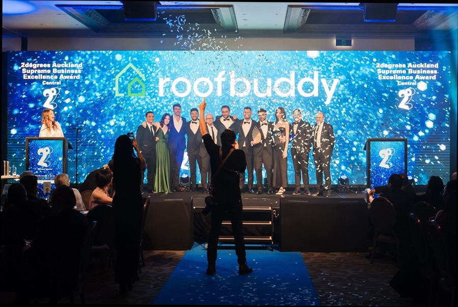
DISC personality profiling.
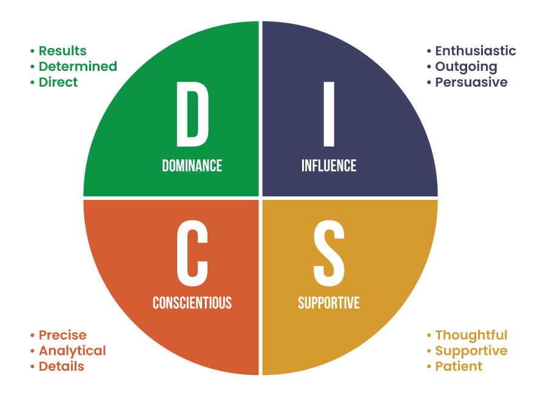
DISC personality profile reference chart. Identify the client’s primary type within the first five minutes.
DISC is a practical tool for reading clients quickly and adapting your approach in real time. The goal is to identify the client’s primary profile within the first five minutes of a conversation and adjust your communication, your pace, and your closing approach accordingly.
This is not a theory exercise, it’s an operative field skill. Every hour you spend understanding DISC is an hour invested in winning sales you would otherwise lose, because the consultant who can meet a client where they are is dramatically more effective than the consultant who delivers the same approach to every human being regardless of how that person is wired.
There are four types: D for Dominant, I for Influential, S for Supportive, C for Conscientious. Most people lead with one primary type, with a secondary type that also shows up. In the first five minutes you are reading for the primary. Once you have it, you adjust. If the profile shifts as the appointment develops, you adjust again.
One critical ground rule before we go into the types. DISC is a tool for communication, not a tool for categorising or dismissing people. You are not putting anyone in a box; you are reading signals so you can serve them better. A client you have read as a D type is not “a D.” They are a person who happens to communicate in a direct, outcome-focused way and knowing that helps you give them what they actually need from you.
The D type: Dominant.
How to spot a D type in the first five minutes.
They get to the point fast, they will tell you what they want early and they will not spend much time on pleasantries. Their home or office environment tends to be efficient and that helps them move quickly. They make eye contact assertively and feel comfortable while doing so. They interrupt if you are taking too long to make a point. They want outcomes and they want to know what it costs and what they get. They are used to being in charge and make decisions frequently and they make them without needing everyone around them to agree.
What a D type needs from you.
Respect for their time. Efficiency. Clear options presented without fluff. The sense that they are making the decision, not being sold to. A D type who feels like they are being managed or handled will disengage fast. A D type who feels respected and presented with clear information will make a fast decision.
How to adapt your approach.
Skip the extended warm-up and read the room. If they are clearly not a small-talk type, do not force small talk. Get into the substance faster than you normally would. Lead with the best outcome and the price with confidence. Give them two or three clear options. Do not present six variations and walk through each in detail or they will stop listening.
Be concise, accurate and direct. The principle from training: “You’ve got to listen well first. Don’t talk over them. Provide a solution.” That sequence is exactly right for a D type. Listen, understand the outcome they want, then provide a direct and efficient path to that outcome.
What to avoid.
Long social preamble or endless detail before getting to the point. Vague options where they have to figure out which one is best. Over-explaining the methodology when they want the answer.
How to close a D type.
Direct. “Based on what you’ve told me, the right answer here is option A. Are you happy to proceed?” Two options maximum. Make a firm recommendation but leave it to them to decide. They want a decision moment, not a committee session.
The I type: Influential.
How to spot an I type in the first five minutes.
They are warm, expressive, and they enjoy the conversation. They will tell you something personal in the first minute and will introduce you to others in the house. They respond visibly to your energy and use stories and anecdotes. They like to be liked and they want you to be friendly.
What an I type needs from you.
Energy, engagement and connection. A sense that they are dealing with someone who gets their vibe. Acknowledgement of their stories and enthusiasm for the project.
How to adapt your approach.
Match their energy and bring your own stories; make the appointment dynamic, entertaining and engaging and involve them in the process. Acknowledge their enthusiasm and reflect it back. Stories work especially well with I types because they live in the social dimension where stories naturally land.
What to avoid.
Flat, data-heavy presentations or ignoring the social dimension / implications. Rushing past the personal connection because you have business to do. An I type who feels you are not interested in them as a person will not buy irrespective of how strong your offer is - they will buy it off someone they like and who likes them. It’s the relationship dummy, everything else is window dressing.
How to close an I type.
Make it exciting and paint the picture of the outcome and benefits for everyone involved (the whole household and even the neighbour who gets to admire it). Use social proof - other happy clients, great reviews, the Mrs Wiggins story - make them feel good about the relationship with you and saying yes; the decision is emotional more than analytical.
The S Type: Supportive.
How to spot an S type in the first five minutes.
Warm welcome but quiet - they are measured, considerate and patient. They ask thoughtful questions about the process and may defer to other decision makers more often. They are concerned about disruption - how long, when, what happens if something goes wrong. They do not push back, but they do not commit quickly either. They want to feel safe and confident before they decide.
What an S type needs from you.
Reassurance and a clear sense that they are dealing with someone reliable. Explanation of the process step by step and where the impacts will be felt. Genuine answers to their questions about disruption, timeline, what happens if something goes wrong - not glossing over it. They want to know they will be looked after and unless they genuinely feel it, they will stay on the pending list forever in a state of indecision.
How to adapt your approach.
Build rapport genuinely and take your time more. Explain the process slowly and completely. Emphasise consistency, reliability, the support you and Roofbuddy will provide throughout the process, not just at the point of sale. Reassure on disruption and what happens during the work; that it will all be worth it. Talk about the warranty and the QA process - those are reassurance points specifically designed for S types.
What to avoid.
Pressure of any kind, urgency-based closes that create anxiety rather than confidence. Skipping the relationship-building phase or moving too fast. An S type who feels rushed becomes more hesitant, not more decisive.
How to close an S type.
Paint the picture of the outcome and make it feel safe to say yes. Emphasise the guarantee, the QA, the ongoing relationship. “You’ll have me as your point of contact the whole way through.” The S type wants to know they are not alone in this decision or the events following.
The C type: Conscientious.
How to spot a C type in the first five minutes.
They have done research before you arrived and they may have prepared notes. They will ask specific technical questions: the spec of the iron, the warranty terms, the gauge, the installation method, the credentials of the team and they want accuracy in the answers. They may challenge numbers or push back on claims that sound vague. They are measured, analytical and they take their time, they do not make decisions until all the boxes are checked and want every detail handled correctly and mutually understood before they commit.
What a C type needs from you.
Data, accuracy and thoroughness. A consultant who knows their product inside out and can answer detailed questions without bluffing. Documentation: the warranty, the LBP credentials, the insurance, the spec sheet - A C type is doing due diligence and they can only respect a consultant who can handle it.
How to adapt your approach.
Come prepared at a level of detail you would not necessarily bring to every appointment, know the specifications, know the warranty terms, know the installation process steps and know your company credentials. Walk through the spec in detail, explain the QA process by pulling up the entire checklist. When they ask about the gauge of the iron or the nature of the warranty, you answer accurately and completely.
If you do not know something, say so and commit to finding out. “That’s a great question. I want to give you the right answer on that. Let me confirm it and come back to you today.” A C type respects intellectual honesty and is allergic to BS. They will not respect a confident answer that turns out to be wrong, bluffing with a C type is one of the fastest ways to lose the sale.
What to avoid.
Vague claims. “It’s our best product” without being able to say specifically why and rushing the process when they want more information. Soft-selling or relying on enthusiasm and rapport rather than substance, A C type does not want a salesperson they want an expert advisor. Be the expert advisor or the trusted roof doctor in the crisp white coat.
How to close a C type.
Do not rush I and work through each email and question methodically - make sure you’ve answered to their satisfaction by asking them if you have. The close, when it comes, is often preceded by a period of detailed questions and careful review. When those questions have all been answered accurately, the resistance reduces because the work has been done. Offer a detailed written summary. “I’ll put together a full written summary of the spec, the warranty, the install timeline, and the quote. I’ll have it to you tonight. Once you’ve had a chance to review it properly, we can lock in next steps.”
The C type, once they decide, rarely changes their mind. They are one of the most reliable clients you will close so the investment of time and detail is worth it.
Mixed profiles.
Most people lead with one type but have meaningful secondary characteristics from another. The most common combinations worth knowing:
D-I: A fast-moving enthusiast who makes snap decisions. They want excitement, action and movement and they want it now, high energy appointment. Move fast and close confidently.
C-S: A detail-focused, cautious buyer who needs time and thoroughness. They will be polite but they will not be rushed, bring data and patience in equal measure.
I-S: Warm, relationship-focused, concerned about the experience. They want to like you and to feel good about the whole process - connection and reassurance are your primary tools.
D-C: A demanding analyst who wants the best option explained precisely and quickly. They are not interested in your process, they want the answer they are interested in first. Come with data and be direct make sure by the end you’ve covered the 5 steps to the sale if they derail the structure.
The rule in practice: lead with the primary profile you read in the first five minutes. If the profile shifts as the appointment develops, adjust, this is not a rigid system. The better you get at it, the faster the calibration and the more natural the adjustment feels until your mastery is running on autopilot in the background.
Disc self-assessment.
Before you can adapt your style to clients, you need to understand your own default style. The self-assessment below is not a formal psychometric tool, it is a practical starting point. Read through the following descriptors and identify which group most accurately reflects how you naturally operate - be honest as the goal is self-awareness, not a flattering result.
Group A: You move fast and like to be in charge. You are outcome-focused and you can be impatient with slow processes. You get to the point quickly and you expect others to do the same. You are confident making decisions, sometimes faster than the people around you are comfortable with. You do not mind conflict if it gets to a resolution faster. You like winning.
Group B: You are energetic and enthusiastic and you connect with people easily. You talk a lot and you enjoy it. You are influenced by what others are doing and you care about social proof. You are optimistic and persuasive. You can get distracted by the excitement of a new idea before the last one is finished. You want people to like you and you generally succeed at that.
Group C: You are calm, considered, and you prefer to think before you speak. You value relationships and trust and you are a genuinely good listener. You dislike conflict and you tend to accommodate others to keep the peace. You are loyal and consistent. You take time with decisions because you want to be sure.
Group D: You are analytical and detail-oriented. You have high standards for accuracy and you notice errors. You prepare thoroughly. You ask a lot of questions and you are not satisfied with vague answers. You are systematic. You can be slow to decide because you want all the information. You are reliable and precise.
If you matched most strongly with Group A, your primary DISC type is D (Dominant).
If you matched most strongly with Group B, your primary DISC type is I (Influential).
If you matched most strongly with Group C, your primary DISC type is S (Supportive).
If you matched most strongly with Group D, your primary DISC type is C (Conscientious).
Many people will find they match two groups reasonably closely so note both. Your primary type is the one that feels most consistent across different situations. Your secondary type tends to emerge in specific contexts.
Why your own type matters.
Understanding your own DISC profile is not just an interesting exercise, it has direct commercial implications.
A high-D consultant who does not slow down for S-type clients will lose those deals as the client will feel rushed and pressured but they will not say so out loud - they will say they need to think about it and they will not call back. The D consultant will not understand why, because from their perspective the appointment went fine and perhaps from their perspective it did, but it didn’t. The gap between D energy and S need is the gap where the sale disappeared.
A high-C consultant who gets lost in technical detail with a D-type client will lose them in the first five minutes in the weeds. The D type wants the answer, not the methodology. By the time the C consultant has finished explaining the installation process in detail, the D client has mentally moved on and just cant wait to get the consultant out the door.
A high-I consultant who relies on enthusiasm and connection with a C-type client will find the client politely engaged but not buying because the C type needs substance not context. Enthusiasm is fine but it does not substitute for data.
A high-S consultant who struggles to take the close assertively enough will do excellent relationship-building and then lose the sale at the final step. The rapport is there and the trust but without a confident, direct close, the client does not quite get across the line.
Every natural strength has a corresponding blind spot, the exercise of knowing your own type is the exercise of knowing your blind spots. Once you know them, you can compensate. You can consciously slow down when you need to. You can consciously add more data when you need to. You can consciously bring more energy when you need to. You can consciously be more direct at the close when you need to.
The best consultants in the field are not necessarily the ones who have the most natural talent in one area, they are the chameleon’s who have the most range and adaptability. Range comes from self-awareness and sensitivity and awareness to the cues given by others.
Study your own profile and know your default setting and identify where it serves you well. Know where it creates friction, then build the interpersonal skills to bridge the gap.
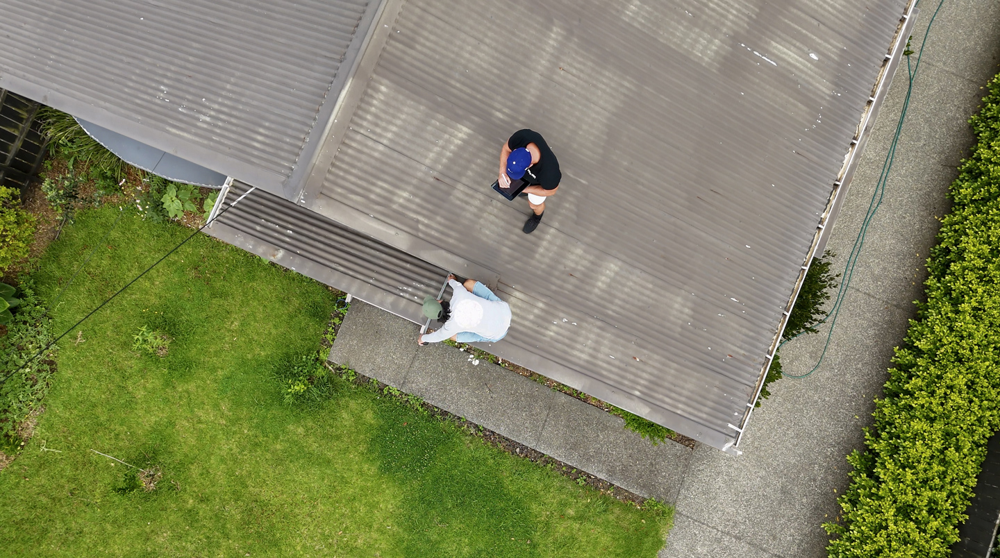
Product knowledge.
You cannot sell what you do not understand - that is not a motivational line it is a practical fact. Homeowners have lived in their houses for 20, 30, sometimes 50 years and know their roof better than you ever will in a 45-minute site visit. What they do not know is what the products mean, what the specifications guarantee, and what the right solution is for their situation; that is where you come in. This chapter gives you the foundation to do it.
Do not skim this chapter or treat it as background reading. Every section here will come up in a sales conversation - guaranteed. When it does, you will either know the answer, or you will not and the homeowner will notice either way. This knowledge was obtained painfully over years of trial and error and more deals getting blown than you could ever imagine - learn vicariously rather than failing 1000 times yourself, it’s much more efficient.
7.1Guardian Seal.
What it is.
Guardian Seal is a membrane coating system. That is the precise definition, use it.
It is a water-based polyurethane coating with pure acrylic resin. The pigments are iron oxide, which serve two purposes: they provide UV protection and they fortify the product and provide elastomeric properties. The film thickness target is approximately 750 microns, though this varies by application and surface condition. It is applied in multiple coats to build up that thickness and to achieve the durability the product is rated for.
Warranties on product efficacy are 10 years stating that the coating will not blister or fail or fail to adhere. Those are the two performance commitments that matter most in a roof coating context and note this warranty does NOT extend to waterproofing - the roof may still leak for mechanical reasons and this will not be covered under the coating warranty and must be fixed at the home owners cost.
Why iron oxide pigments matter.
New Zealand has some of the harshest UV exposure in the world. The ozone layer over New Zealand is thinner than over comparable latitudes in the northern hemisphere, which means UV radiation reaches the surface at higher intensity and does more damage to building materials faster. Standard paint formulations are not built for this environment, Guardian Seal is.
The iron oxide pigments in the formulation block UV penetration into the coating, this protects both the film itself and the metal substrate underneath. The membrane’s flexibility is the other key property: as a roof heats and cools through the daily cycle, the metal expands and contracts. A rigid coating cracks under that movement but a membrane coating moves with the roof with its elastomeric properties. This is why Guardian Seal is superior to standard paint for a roof in New Zealand conditions.
What roofs are suitable.
Roofs between 20 and 40 years old that are in fair overall mechanical condition. Isolated rust issues are fine; intact structure is the key requirement.
Not heavily perforated roofs with severe structural decay or multiple through-rust points; these are roofs that require complete replacement. Applying a membrane to a structurally failed roof is not a solution, it is a delay tactic that will create a warranty dispute and a dissatisfied client.
Maybe: Aging roofs where the cost-benefit calculation is not clear. In some cases Guardian Seal is a legitimate temporary solution, buying the homeowner five to ten years before the roof requires full replacement but be honest about this and discuss with your colleagues. A client who understands what they are buying and agrees to it is not a problem, a client who expected a miracle solution and got a ‘dud’ is a refund request.
Understanding the rust deterioration timeline.
Your job on-site is to assess where a roof sits on this scale, so know it thoroughly.
The earliest sign of surface deterioration. The coating is breaking down but no structural compromise yet - Guardian Seal is an ideal intervention at this stage.
The beginning of structural compromise. The protective layer has failed and oxidation has started on the metal itself, Guardian Seal can still work here and prep work is most important step to reinforce the structure before the coating goes down.
Subsurface oxidation. The rust is forming beneath the surface and pushing upward - this is the range where a careful cost-benefit conversation is needed. A membrane may perform well over bubbling rust in isolated areas, but if bubbling rust is extensive, replacement may be the better investment.
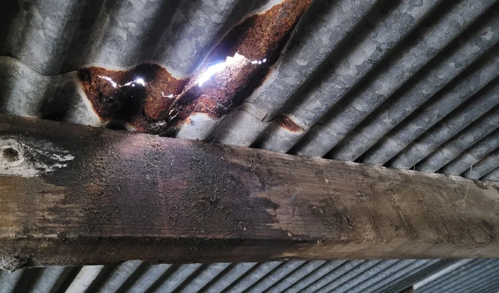
Significant structural compromise where the metal has holes through it. Guardian Seal is not the right product for a perforated roof as a membrane cannot bridge a perforation reliably. Recommend replacement.
On leaks: The principle every consultant must know.
This is critical - adding a membrane does not guarantee solving a leak.
Sell Guardian Seal for protecting the metal and prolonging the life of the roof. There is a genuine chance it solves a leak, because a membrane over a metal surface can seal minor surface imperfections. But a leak is often a mechanical problem: a failed ridge cap, a failed back tray, a degraded internal gutter and no membrane fixes a mechanical failure.
Do not quote the membrane as a leak solution in isolation. If a client comes to you specifically because of a leak, scope the mechanical repair separately and the membrane and the mechanical repair may both be in the same quote, but they are separate line items with separate outcomes. Never guarantee in the initial quote that the membrane will solve the leak.
Asbestos encapsulation: The commercial opportunity most consultants miss.
Guardian Seal can encapsulate asbestos cement roofing so the client doesn’t have to deal with asbestos removal and re-roofing. It’s a great solution.
Encapsulation means: clean the surface thoroughly, prepare it, seal it, apply two coats of Guardian Seal. The asbestos is sealed beneath the membrane and is no longer a friable hazard as long as the membrane is intact. Renewal is required every ten years, which creates recurring revenue so a commercial client who accepts an encapsulation scope is, in practical terms, our client for life.
The reference case is instructive a 800 square meter commercial building required re-roofing. The cost of full asbestos removal and re-roof was prohibitive and the businesses operating in the building could not shut down for the duration of a full removal project. The Guardian Seal encapsulation solution cost $68,000 a small fraction of the full replacement cost, it kept the businesses operational and it created a ten-year recurring contract.
The target clients for asbestos encapsulation are commercial landlords, facilities managers and property developers but asbestos can be encapsulated on residential homes too. Mostly these customers are making commercial decisions based on cost, operational continuity and liability management so lead with those three points in a commercial context.
7.2Guardian Steel (colour and coil GS).
Profiles available.
Guardian Wave: Corrugate. 762mm effective cover, 76.02mm pitch dimensions.
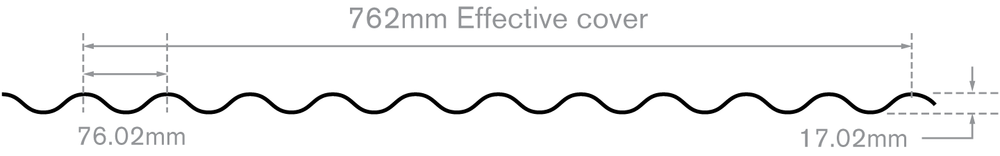
Guardian Span: Trapezoidal. 755mm effective cover, 188.8mm x 29mm dimensions.
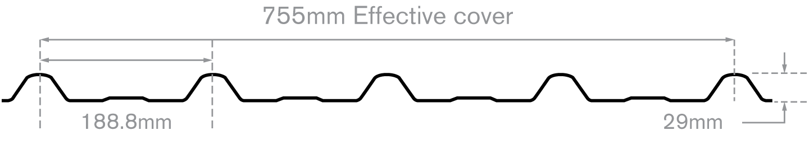
Know these numbers as they are great to rattle off when discussing profiles.
Core technical specifications
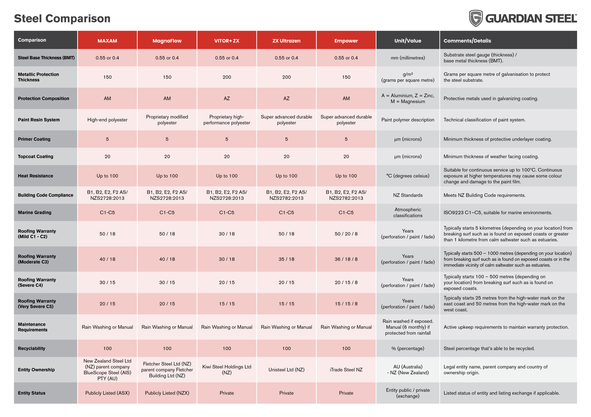
Steel base thickness: 0.55mm or 0.4mm.
Metallic protection: 150g/m2 galvanisation.
Paint resin: High-end polyester.
Primer coating: 5 microns.
Topcoat coating: 20 microns.
Heat resistance: Up to 100 degrees Celsius continuous service.
Building code compliance: B1, B2, E2, F2 per AS/NZS2728:2013.
Marine grading: C1 through C5 per ISO9223.
The flagship colour range.
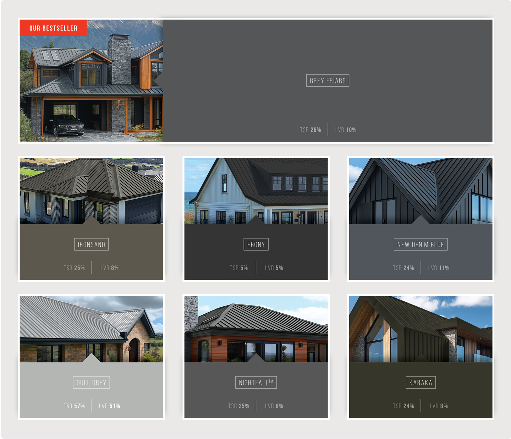
Colours are a representation only. Please refer to the actual paint or product sample.
Grey Friars TSR 26%, LVR 10%. This is the current bestseller in the range.
Ironsand TSR 25%, LVR 8%.
Ebony TSR 5%, LVR 5%.
New Denim Blue TSR 24%, LVR 11%.
Gull Grey TSR 57%, LVR 51%. Highest reflectance in the popular range. Relevant for clients concerned about heat transfer into the building.
Nightfall TSR 25%, LVR 8%.
Karaka TSR 24%, LVR 8%.
TSR is Total Solar Reflectance. LVR is Light Value Reflectance. Higher values mean less heat absorption. When a client asks about energy efficiency or cooling, lead with Gull Grey.
Warranty by environmental zone.
Mild, ISO C1 to C2: 50 years perforation warranty, 18 years paint and fade warranty.
Moderate, ISO C3: 40 years perforation warranty, 18 years paint and fade warranty.
Severe, ISO C4: 30 years perforation warranty, 15 years paint and fade warranty.
Very Severe, ISO C5: 20 years perforation warranty, 15 years paint and fade warranty.
Maintenance requirement: Rain washing provides sufficient maintenance in most locations. For protected areas not exposed to natural rainfall, manual washing every six months is required to maintain warranty.
Environmental zone classification: what you must know before quoting.
The environmental zone you assign to a property determines the warranty the client receives. Misclassifying a property in a milder zone than the actual conditions voids the manufacturer warranty. This is not a technicality, it is a liability.
Mild, ISO C1 to C2: More than 5,000 metres from breaking surf. More than 1,000 metres from calm saltwater. No salt deposits visible on surfaces.
Moderate, ISO C3: Within 1,000 metres of breaking surf. Calm saltwater estuaries nearby. Occasional salt smell detectable.
Severe, ISO C4: Within 500 metres of breaking surf. Light salt deposits visible. Frequent salt smell.
Very Severe, ISO C5: Within 30 to 60 metres of the high-water mark. Heavy salt deposits. Near-constant salt spray present.
The coastal rule is absolute: any property within 50 metres of the beach requires COLORSTEEL Altimate for the manufacturer’s warranty to remain valid. Guardian Steel standard grades cannot be specified for these properties. Do not quote standard Guardian Steel within 50 metres of the beach.
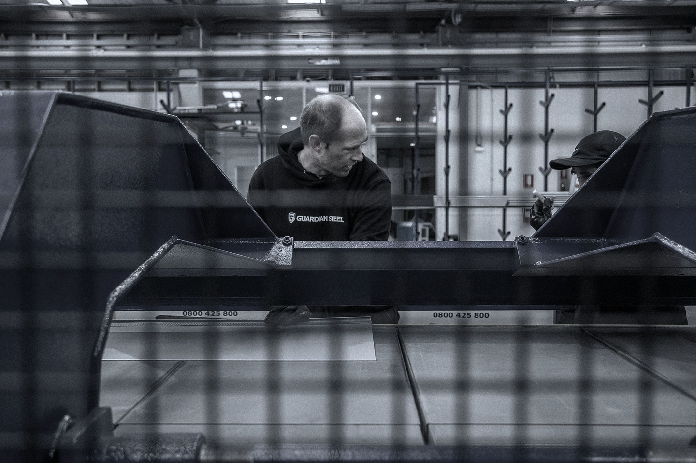
7.3Empower Em-One (Pre-painted steel).
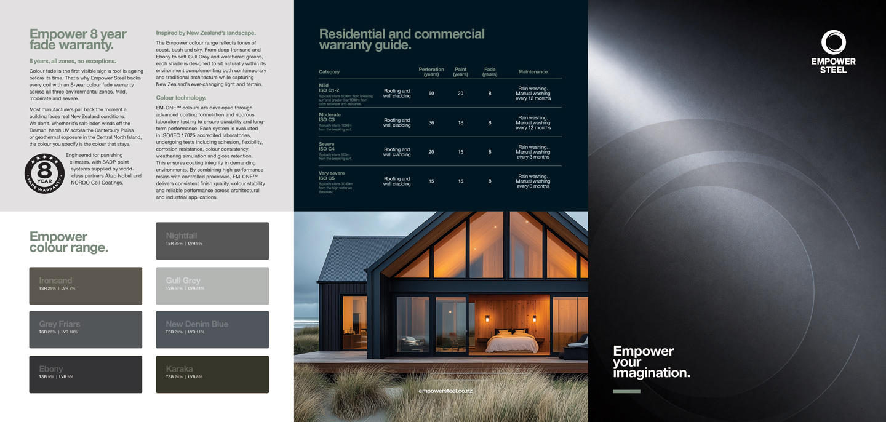
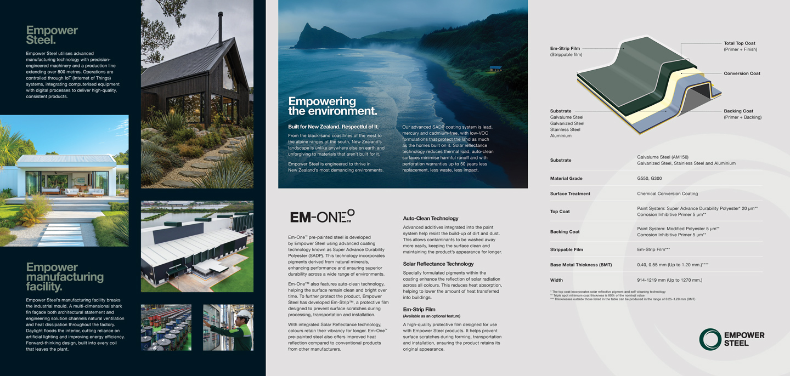
Manufacturing standards.
Em-One is produced on a fully integrated production line extending more than 800 metres. The line uses IoT systems with computerised equipment throughout. Real-time digital monitoring tracks quality at every stage, this is advanced manufacturing. The precision-engineered machinery is not incidental to the product quality it is why the coating tolerances can be held consistently.
SADP coating technology.
SADP stands for Super Advance Durability Polyester. This is the coating system applied to Em-One product.
Key formulation facts for client conversations:
- Lead-free, mercury-free, cadmium-free. These are the three heavy metals most commonly associated with industrial coating environmental concerns. Em-One does not contain them.
- Low-VOC formulations. Volatile organic compound emissions during application and curing are minimised.
- Pigments derived from natural minerals. This is relevant to clients asking about environmental credentials.
Em-One product features.
Auto-clean technology: Advanced additives in the coating resist dirt and dust build-up. Contaminants wash away more easily in rain events. The roof maintains its appearance for longer without maintenance intervention. This is a genuine functional benefit, not a marketing description.
Solar reflectance technology: Specially formulated pigments enhance the reflection of solar radiation. Less heat is absorbed into the metal. Less heat transfers into the building beneath. The thermal load on the building’s interior is reduced. For commercial clients managing energy costs, this is quantifiable in terms of cooling load reduction.
Substrate options.
Em-One is available on four substrates: Galvalume Steel (AM150), Galvanized Steel, Stainless Steel, and Aluminium.
Material grades available: G550 and G300.
Coating specifications (full stack)
Pre-treatment: Corrosion resistant conversion coating applied to the substrate before any paint layers.
Top coat: SADP paint at 20 microns, over corrosion inhibitive primer at 5 microns.
Backing coat: Modified polyester at 5 microns, over corrosion inhibitive primer at 5 microns.
Strippable film: Em-Strip applied to the finished surface. This protects against scratches during processing, transportation, and installation. It is removed once installation is complete.
Base metal thickness: 0.40mm or 0.55mm.
7.4The full product range.
Roofbuddy does not sell one thing, it sells a full suite of services. Knowing where each product sits, when to offer it, and how to upsell from one into another is how the best consultants build larger average job values and generate referrals.
Here is the complete range.
The core product and service - existing homes with deteriorated roofing requiring replacement. This is the majority of Roofbuddy’s volume so a consultant who masters the reroof conversation masters the business.
Drawn straight from architectural plans. A rare enquiry but high value and high quality work that our roofing network can service easily and profitably.
Roofing iron applied to the sides of a house rather than the roof surface, the specification is identical to the roof surface product but laid horizontally. Clients sometimes do not know this is a service Roofbuddy offers. Mostly applied in a new build application.
Spray-on liquid rubber membrane that carries a 10-year guarantee. Best suited to roofs in the 20 to 40 year age range that do not yet warrant full replacement but need surface protection. Position it as the entry point for clients whose roof is too good to replace but too deteriorated to leave as is.
The thicker version of Guardian Seal, designed for permanently wet surfaces including gutters and flat sections. If a client has ponding water issues on a low-pitch section or a gutter with cracks, Guardian Seal Pro is the appropriate product. Overcoating TPO, internal gutters, flat roof’s in general - this is your go to.
A detailed condition assessment with photographs documenting the current state of the roof. Suitable for property purchasers conducting due diligence, homeowners preparing for insurance renewals, and property managers maintaining asset records. This product has referral potential through property managers and real estate agents.
Large commercial buildings requiring detailed condition assessments. The scope and pricing are determined by building size and complexity. This is the entry point for commercial accounts.
Gutters and downpipes can be quoted and replaced independently of the roof. When specifying gutters, measure lineal metres of gutter run and count the number of downpipes. These are the two inputs required for an accurate quote, clients often do not know gutter replacement is available as a standalone service.
Asbestos removal must be completed by a Licensed Building Practitioner licensed for asbestos work. The standard process is sequential: one section of the roof is removed by the asbestos specialist, the roofer immediately follows to install the new material on that section, then the specialist moves to the next section. This approach keeps the roof weathertight at all times. Do not attempt to coordinate this as a simultaneous full-roof strip. It creates an unweathertight roof during the process.
Cost is $80 to $250. Roofbuddy covers this cost as a sales facilitation tool. The logic is straightforward: if a homeowner suspects asbestos but is not certain, covering the test cost removes the barrier to finding out. Once the test confirms asbestos, the conversation about removal and replacement has a concrete starting point. The act of covering the test cost also creates goodwill - when someone does something for us, we feel an obligation to give something back. Cover the cost, facilitate the close.
Testing laboratory: Focus Analytics, Unit C1, 4 Pacific Rise, Mount Wellington, Auckland 1060.
Leaf guard products that prevent debris accumulation in gutters. The preferred supplier is Four Seasons. The reason this matters: gutter protection products from some other manufacturers involve contact between two dissimilar metals, which creates a galvanic corrosion risk. Four Seasons product avoids this. Approximate installed cost is $3,500 to $5,000 depending on gutter run length.
A specialist service requiring a separate process. One important point for consultants to know: when solar installation occurs at the same time as a reroof, the client may qualify for a one-percent bank loan rate. This is a financial incentive that can be decisive for clients who are on the fence. Raise it when solar comes up in a reroof conversation.
Delivered through specialist suppliers. Roofbuddy facilitates this service rather than performing it directly. If a client’s roof is in good structural condition but covered in lichen, moss, or staining, cleaning may extend the roof’s serviceable life before a membrane or replacement is needed.
Converting internal box gutters to external gutters. Box gutters (internal gutters built into the roof structure) are a common source of leak and maintenance problems because failure of the internal waterproofing leads directly to water ingress into the building structure. Converting to an external gutter eliminates this failure mode. This is a structural job: a builder is required alongside the roofer. Quote this carefully and ensure the builder is engaged in the scope from the outset.
7.5Competitive differentiation.
The language rule.
Never use the words “competitors” or “competition” in a client conversation. The phrase is “friends in the industry.” This is not a nicety; it is a positioning decision. Disparaging other roofing companies makes Roofbuddy sound defensive where describing them as friends in the industry makes Roofbuddy sound confident and established.
The 10-point comparison.
When a client asks why they should choose Roofbuddy, or when a client has received a lower quote from a friend in the industry, this framework is how you respond. Do not memorize the words but understand the substance and the words will follow.
| Roofbuddy | Industry |
|---|---|
| Initial contact | |
| Call within 24 hours. | Three days or more, if they call at all. |
| Website | |
| High-value, design-optimised, with Q and A dropdowns, professional service hierarchy and a clear value proposition. | Generic family-owned boilerplate where the website looks like it was built ten years ago and has not been touched since. |
| Service offering | |
| Full suite including membrane, repairs, reroof, new build, asbestos services, and all material types. | Usually one service type maximum and if your roof needs something outside their specialty, they cannot help you. |
| Sales team training | |
| Elite level, two weekly training meetings. Comprehensive onboarding documented in this manual. | No meetings or structured onboarding - ‘vibe selling’. |
| Measurement | |
| 3D aerial measurement tools, Nearmap, PropertyValue, drone capability. | Tape measure and notepad. |
| Quote delivery | |
| Consolidated dashboard, 90% mobile-optimised. Includes images, measurements, and explicit exclusions. | Email plus PDF attachment. Text-heavy with no images and exclusions often absent so what’s being offered is obfuscated. |
| Quote turnaround | |
| One hour to two days - 90% of quotes delivered within two days. | Three days to one and a half weeks, if they quote at all. |
| Multiple quotes | |
| Multiple comparable quotes on the same specification, same day, so the client can compare options. | One quote, weeks of waiting. |
| Follow-up | |
| 80 to 100% proactive follow-up rate. | Under 10% but typically under 2%. Send a quote and pray to hear back. |
| Post-sale support | |
| QA processes, dispute resolution, mediation capability, Customer Warranty. | Workmanship warranty from a company that may not exist when the warranty claim arises. |
The sky dishes exclusion.
This is the single biggest operational innovation in Roofbuddy’s process and it solves a problem that every roofing company encounters. Here is what happens without the exclusion: a roofer removes a sky dish to access the roof, reinstalls it after the job, and the homeowner discovers their satellite reception has changed. The dispute that follows is about who is responsible for the reception problem. It consumes time, damages relationships, and sometimes costs money.
The solution is explicit exclusion. Every Roofbuddy specification excludes sky dishes and TV aerials from the scope of work. The client is told at the quoting stage that the roofer will reposition the dish to access the roof and will reinstall it, but cannot guarantee reception quality after reinstallation because that depends on precise alignment that requires specialist equipment. The client is advised to contact Sky directly after the job to have the dish realigned if needed.
This single change eliminated a major category of post-installation disputes. It works because the client knows in advance. If there is no surprise, there is no disagreement or misunderstanding and thus no dispute. The exclusion is not a way of avoiding responsibility, it is a way of being honest about what a roofer can and cannot guarantee. The specification templates have been iterated on thousands of times to adopt these type of learnings.
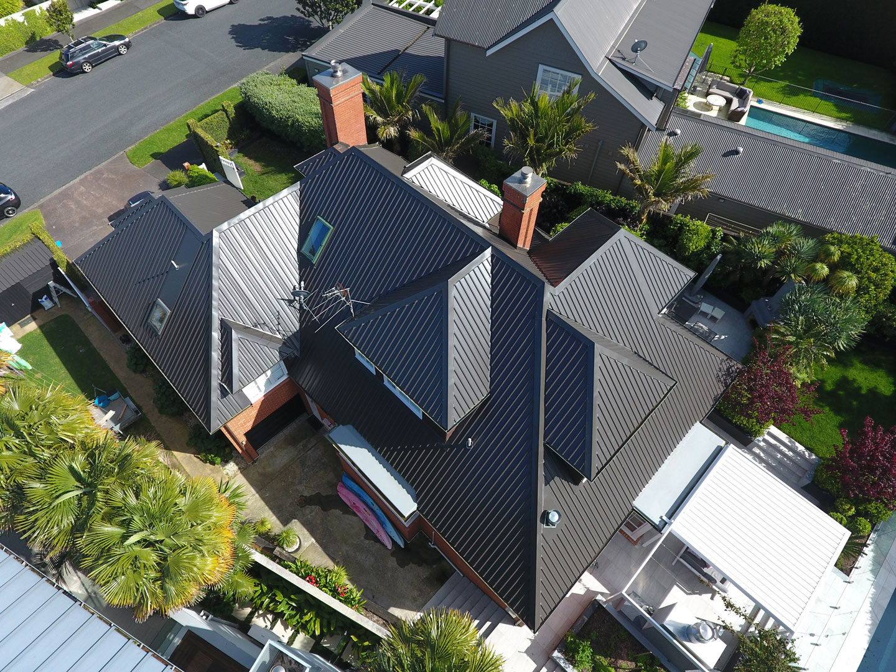
Roofing domain knowledge.
8.1Roofing domain knowledge.
This chapter exists so you can speak the language of roofing competently in front of any client. A consultant who fumbles the names of roof components, who cannot tell a hip from a ridge, who does not know what a back tray does, is a consultant the client will not trust with their $50,000 decision. The vocabulary in this chapter is not optional.
Read it. Refer back to it. Practise pointing to a roof on the street and naming what you see. The first 30 days in the field are when this knowledge has to lock in.
Anatomy of a roof.
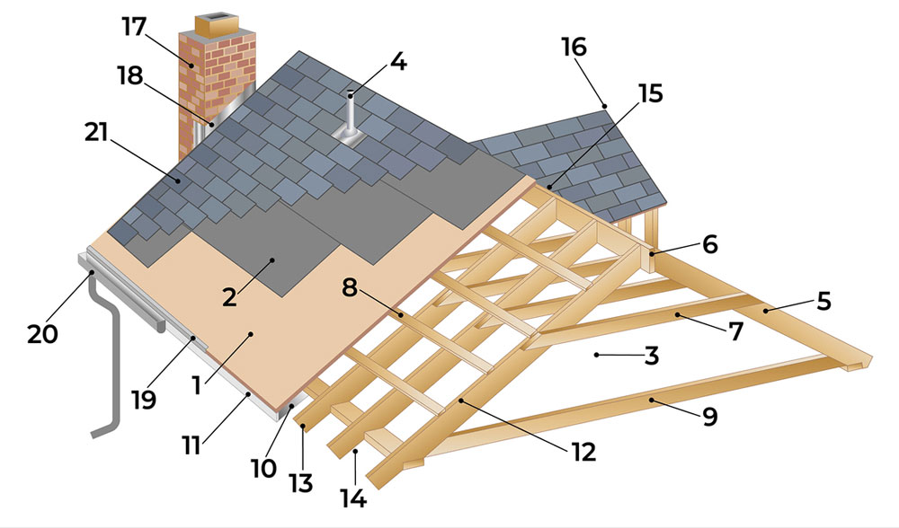
- 1. Decking
- 2. Underlayment
- 3. Attic
- 4. Vents
- 5. Rafter
- 6. Ridge
- 7. Collar beam
- 8. Battens
- 9. Joists
- 10. Soffits
- 11. Fascia
- 12. Rake
- 13. Hip
- 14. Eaves
- 15. Valley
- 16. Dormer
- 17. Chimney
- 18. Flashing
- 19. Drip edge
- 20. Gutters and downspouts
- 21. Covering
Roof material types.
Identifying the material on an existing roof is the first thing you do on every site visit. Material determines what is possible. Recommend the wrong intervention because you misread the material and you have wasted everyone’s time at best, or created a warranty problem at worst.
Metal sheet roll-formed into wave-form panels and fixed to the roof with exposed screws. The most common metal roof profile in New Zealand. The traditional shape is rounded and wavy.
Steel sheet with a ribbed trapezoidal cross-section - a quadrilateral with one pair of parallel sides. Can be run to a 3-degree pitch. Sometimes mistakenly referred to as corrugated. The two profiles are different. Know the difference.
Standing-seam concealed-fix steel. Approximately 2.5 times the cost of trapezoidal or corrugated due to extra labour, even though the raw steel content is comparable. Visually identifiable by the vertical seams between flat panels and the absence of visible fasteners.
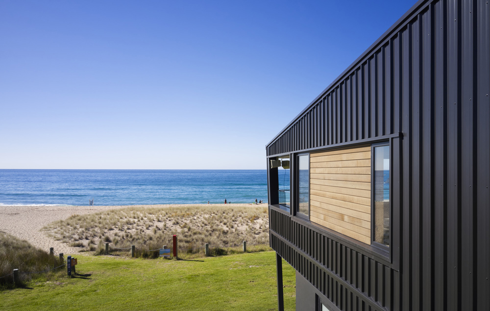
Specialist coastal-grade steel for properties within 50 metres of breaking surf. Standard COLORSTEEL grades are not warranty-compliant in those zones. If a property is on the beach, you specify Altimate only. The coastal rule from Chapter 7 applies here in operational form.
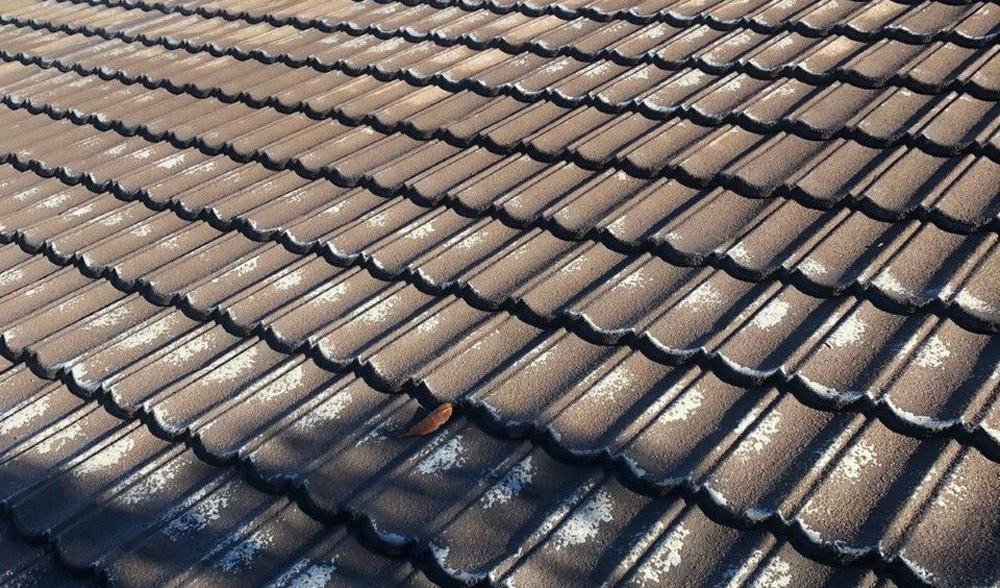
Stone-chip coated metal tile, produced from the 1960s onwards. Tiles produced from the late 1960s to mid-1970s often contain asbestos chips in the coating. Later versions may be smooth without the asbestos. You cannot tell visually whether a decramastic roof contains asbestos. Testing is required.
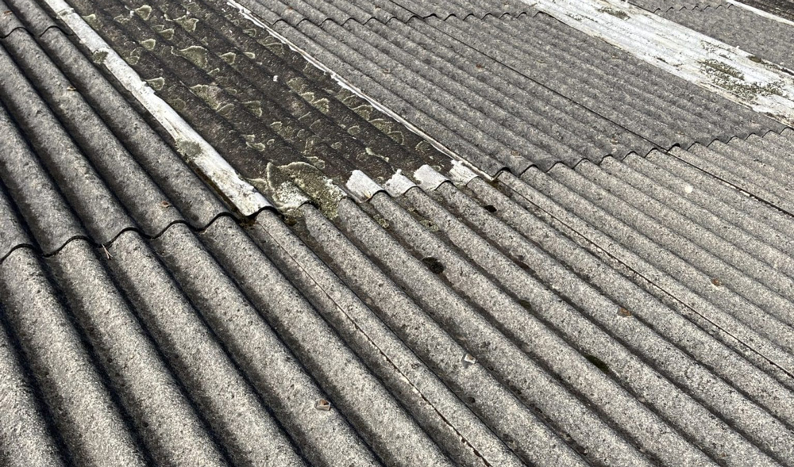
Corrugated cement sheet, white to grey in colour, sometimes painted. Hard and brittle. Distinguishable by golf-ball dimpling on one face. If you see Super 6, asbestos is present. Treat with appropriate caution: do not break or sample the sheet without protective gear, and follow the testing process in section 8.6.
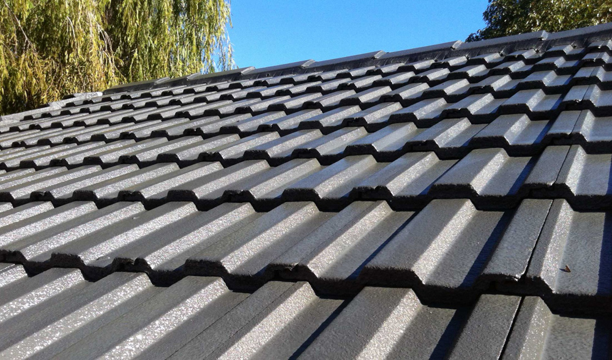
Generally found on homes that are 50 years or older. Concrete tiles are heavy relative to metal roofing. They have a flat ridge profile (important for identification, covered in the shapes and penetrations sections). By the time a concrete tile roof needs attention, it usually needs full replacement because individual tile replacement is difficult and ageing concrete becomes porous and brittle. If you are on a concrete tile property, the conversation is typically a full reroof.
Fired clay tile, often used on heritage and Mediterranean-style properties. Distinguishable from concrete by the raised, curved ridge profile. Concrete tiles have flat ridges; terracotta has rounded.
Bituminous shingle, layered overlapping. Common in North American construction, less common in New Zealand. Where present, replacement typically follows the same patterns as metal roofing - full strip and recover.
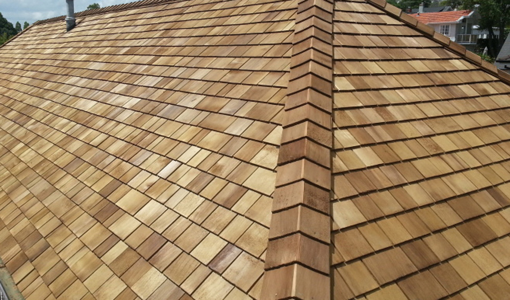
Wooden shingle tile. Uncommon in New Zealand residential. Where present, often requires complete replacement rather than refurbishment.
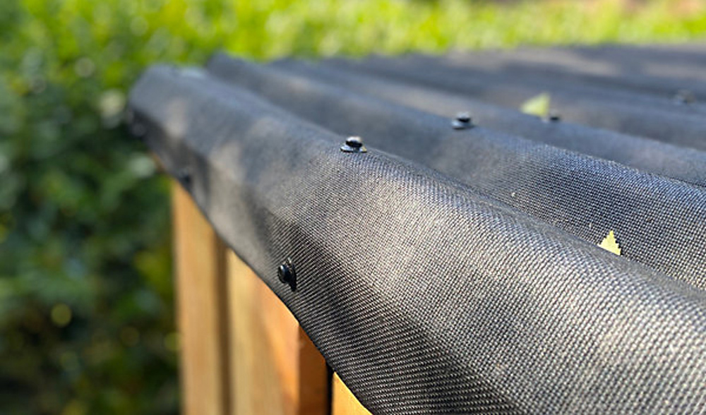
Corrugated bitumen-saturated organic fibre sheet, originally manufactured in Europe in the 1950s. Came to New Zealand in the early 1990s and was withdrawn mid-2000s. Common issues include delamination, fading, colour leeching, sagging, cracking, and disintegration. Identification: visibly thicker than corrugated iron, with a fibrous surface texture, and trough size much larger than a corrugated iron sheet.
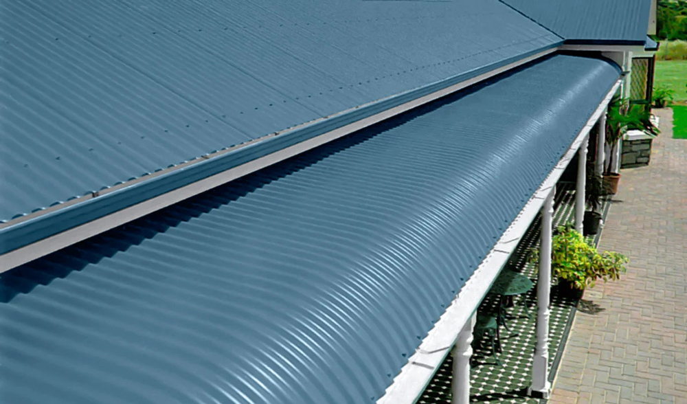
A rounded or curved architectural feature at the edge of a roof, softening the transition between the roof and the exterior walls. Adds a decorative element. More common on heritage homes.
0.9mm aluminium roofing product. Does not corrode from water exposure but is sensitive to galvanic corrosion if the wrong fasteners are used. Expensive and difficult to install - cannot be drilled in place, must be marked, removed, drilled, and reinstalled. A specialist product.
8.2Roof shapes.
The shape of the roof determines how it sheds water, how complex the flashing requirements are, and how the roof is measured. Eight shapes you need to identify on sight.
The triangular portion of a wall formed by the intersection of two sloping roof surfaces. A gable roof has two sloping planes meeting at a ridge with vertical triangular ends.
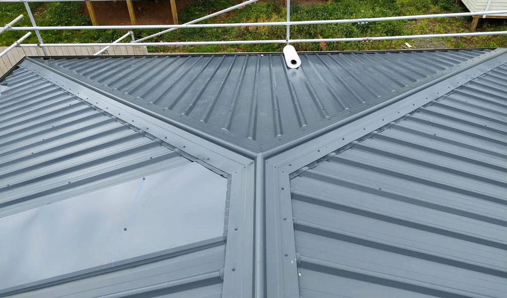
A roof with sloping sides that meet at hips - angled external junctions where two sloping sections meet, creating ridges that run diagonally across the structure.
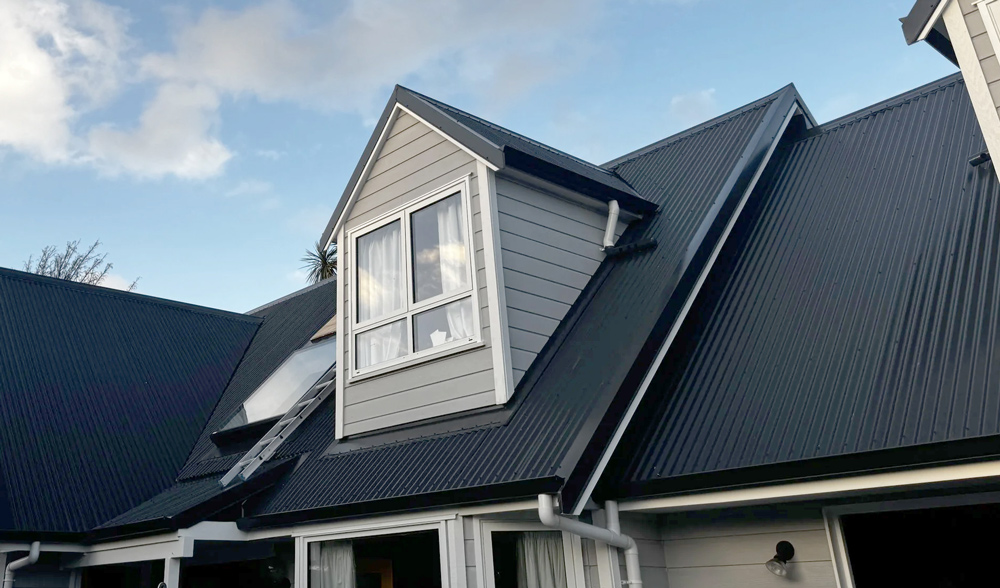
A structural element protruding from a sloped roof, featuring a window or set of windows with its own roof. Dormers are designed to provide additional light, ventilation, and space to the attic or upper floor. They create complex flashing requirements at all junctions.
Two inward-sloping planes meeting at a central valley. Uncommon in New Zealand residential. The central valley is a high-risk water collection point and must be flashed and drained carefully.
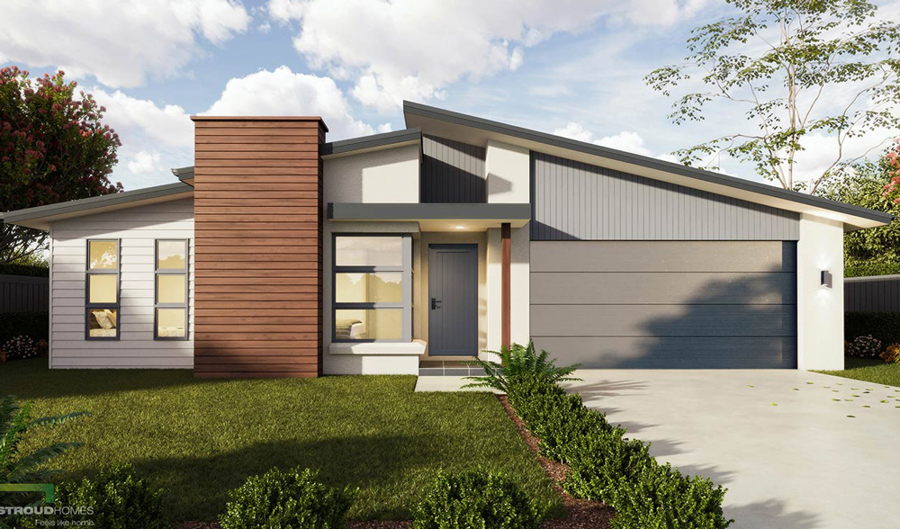
Slanted on one side with one side wall taller than the other. A simple single-plane sloping roof.
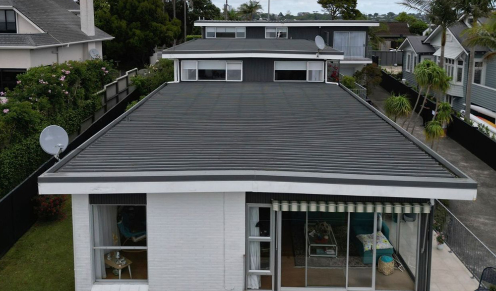
A flat roof with a curved ridge in the middle. The iron is pinned down on either side to create a 1-2 degree fall so water falls off either side of the ridge into gutters. For warranty compliance the roof must have at least a 3-degree pitch. To fix a banana roof, build in the new pitch by adding substructure under a new roof. This is a Roofbuddy term, not an industry term.
Various decorative shapes. Where you see one of these, document carefully - they require specialist flashing approaches and the quote needs to reflect the extra labour.
Anything under 3 degrees of pitch. Membrane is generally the right answer for very low pitch surfaces; metal needs at least 3 degrees for warranty compliance.
8.3Roof components - The vocabulary.
These are the words you will use every day on every site visit. Learn them. Be able to point at any of these on a roof and name them correctly.
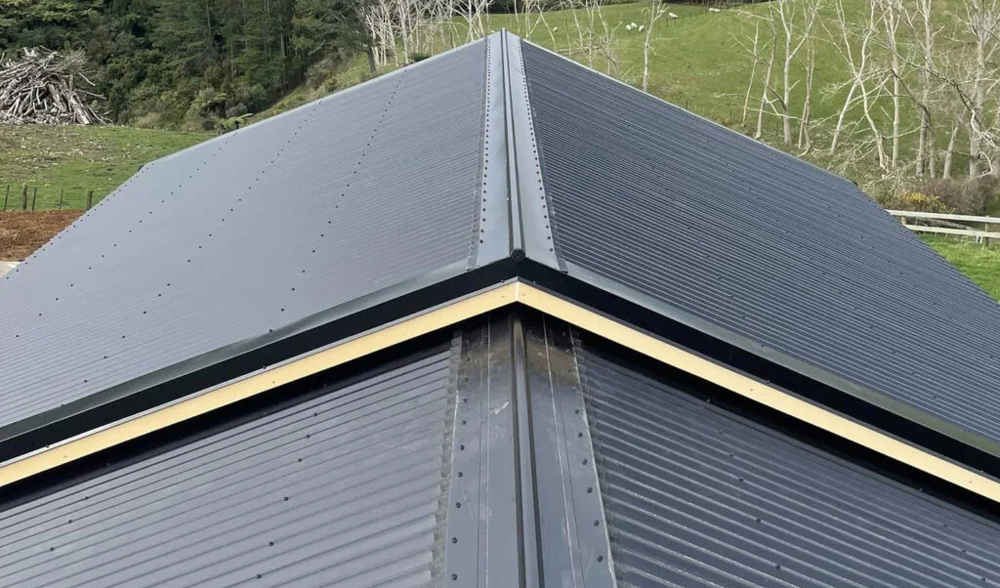
The highest point along the apex where two sloping sides of a roof meet, forming a horizontal line. The ridge is a critical structural element and the ridge capping is one of the most important flashing components.
The angled external junction where two sloping sections of a roof meet, creating a ridge that runs diagonally across the structure.
The underside or eave of a roof overhang. The soffit provides a finishing touch to the roof structure while concealing and protecting the rafters and other elements.
The triangular-shaped section of a wall between the edges of intersecting roof pitches. Forms the end of a pitched roof, extending from the eaves to the ridge.
The vertical, forward-facing board that runs along the lower edge of a roof, connecting the edges of the rafters or trusses. Positioned just beneath the roofline. The fascia supports the gutter. Fascia condition is assessed during the site inspection.
Horizontal structural members in a roof framework, typically placed perpendicular to the rafters. Positioned between the main roof supports such as trusses or rafters. Purlins provide additional support and help distribute the load of the roof covering evenly. On steeper pitch roofs, thicker steel is used so that the purlins do not show through visually.
Any metal or membrane component used to waterproof a junction between the roof and another surface: walls, penetrations, ridges, valleys, or edges. Correct flashing installation is the primary determinant of roof performance over time.
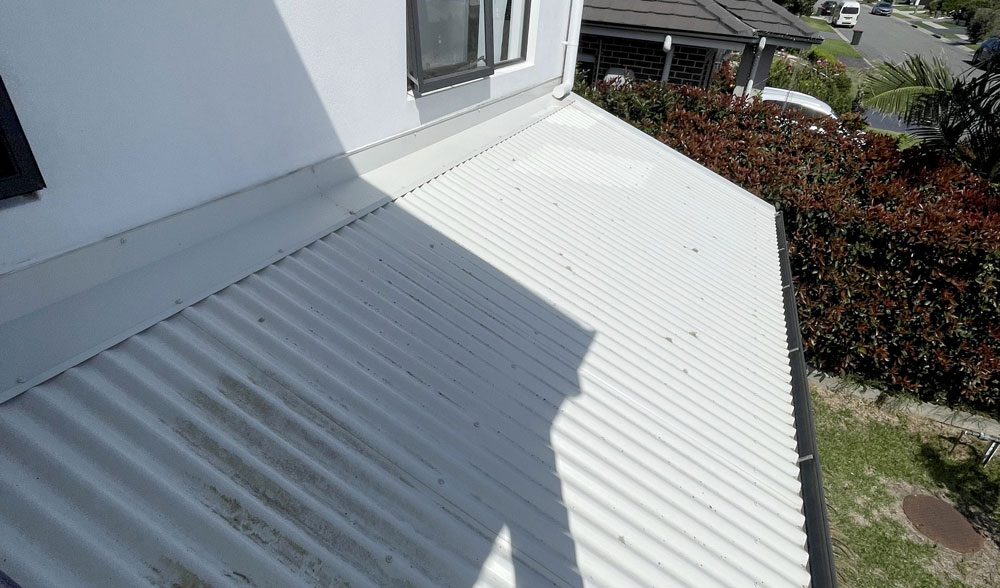
A narrow strip of material, typically metal, installed along the edges of a roof. Positioned under the roofing material, the apron extends beyond the roof’s edge and facilitates proper water runoff. One of the most common leak points on lean-to roofs and dormers.
A horizontal flashing component at the rear section of a roof where it meets a wall or vertical surface. Directs water away from the wall junction and onto the roof surface. Critical to correct flashing installation. A failing back tray is a common cause of internal water ingress.
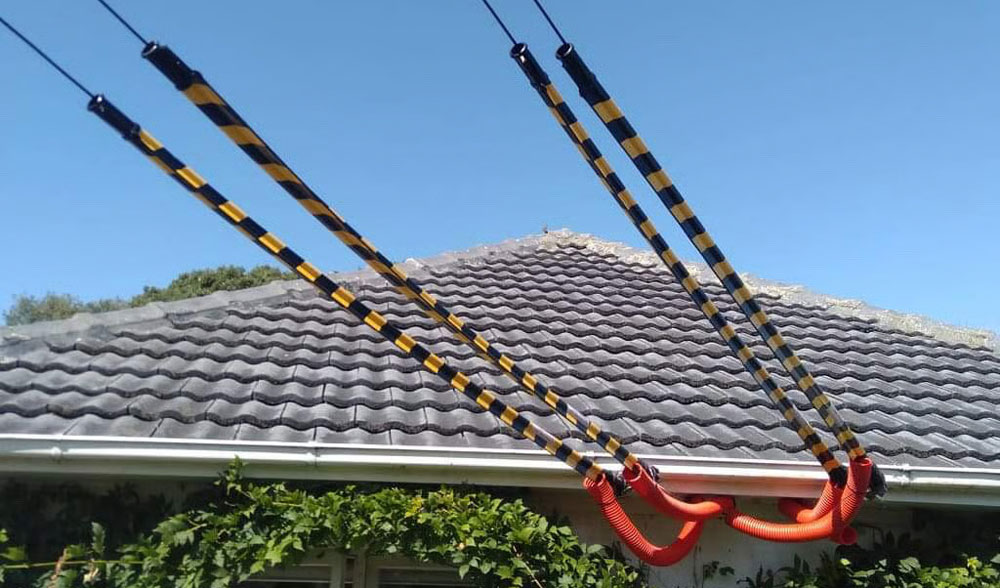
Protective covering for electrical cables where they exit through the roof. Identifiable by a bolted connection at the soffit - the bolt holds the sleeving in place where the cable passes through. Note it in the penetration count and photograph the bolted soffit connection. The roofer needs to work around the sleeving without disturbing the cable inside.
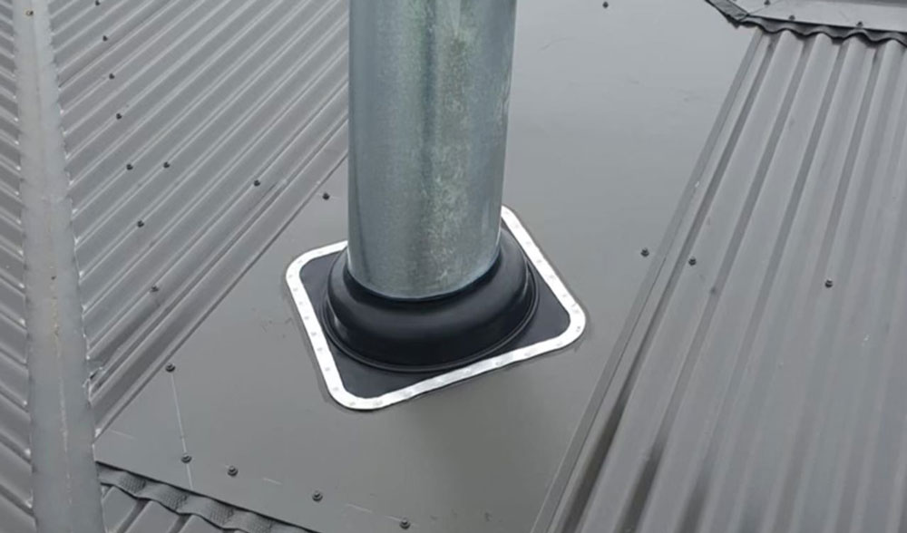
A brand name (used generically) for a flexible rubber boot flashing used around round pipe penetrations. Available in standard and square profiles. Where existing dektites are present, assess their condition - aged rubber splits and loses its seal.
Secondary waterproofing layer installed between the roof structure and the metal roofing material. Specified on every reroof.
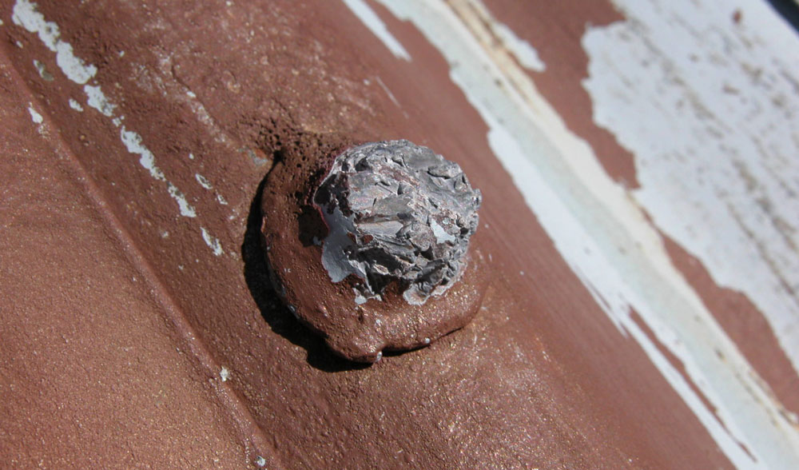
Specialist fixings used in certain roofing applications. Note carefully when specifying as incorrect fixings can void warranties.
8.4Pitch rules of thumb.
Pitch is the angle of the roof surface. It determines what products are warranty-compliant.
Under 3 degrees: metal is not warranty-compliant. Membrane (Guardian Seal or Guardian Seal Pro) is the right intervention. If the client wants a metal roof on a low-pitch section, the pitch must be built up structurally before metal can be specified.
3 to 8 degrees: low pitch. Metal works but flashing requirements are higher. Trapezoidal is preferred over corrugated at the very low end of this range as it is warrantable down to 3 degrees.
8 degrees and above: standard pitch. All metal profiles work, the shallower end of this range still benefits from careful flashing detail.
Repitching a roof: changing the pitch can solve water pooling, debris traps, and degradation issues. It requires removing the existing roof and building substructure to raise the ridge. Quote this carefully - a builder is required, not just a roofer and this may be restricted building works and require a consent.
8.5Roof penetrations.
A penetration is anything that goes through the roof surface. Every penetration is a potential leak point. Every penetration must be documented in the quote with measurements and photographs. Nine common types follow.
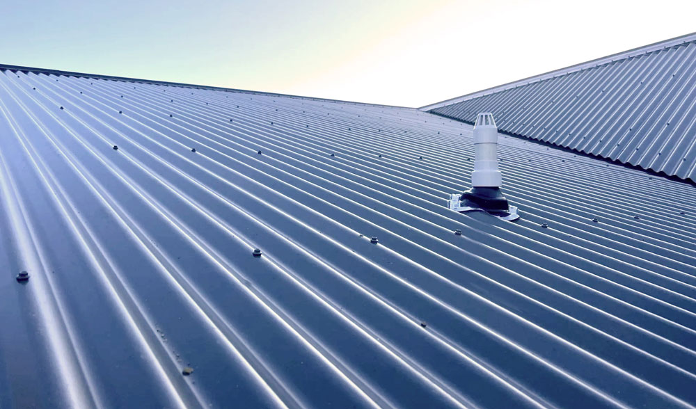
Bathroom and toilet sump plumbing vent. On the outside of the building. Short and stubby. Sealed at the roof with a dektite.
Hot water cylinder overflow
Tall and thin pipe penetration. Often near the eave above the cylinder location.
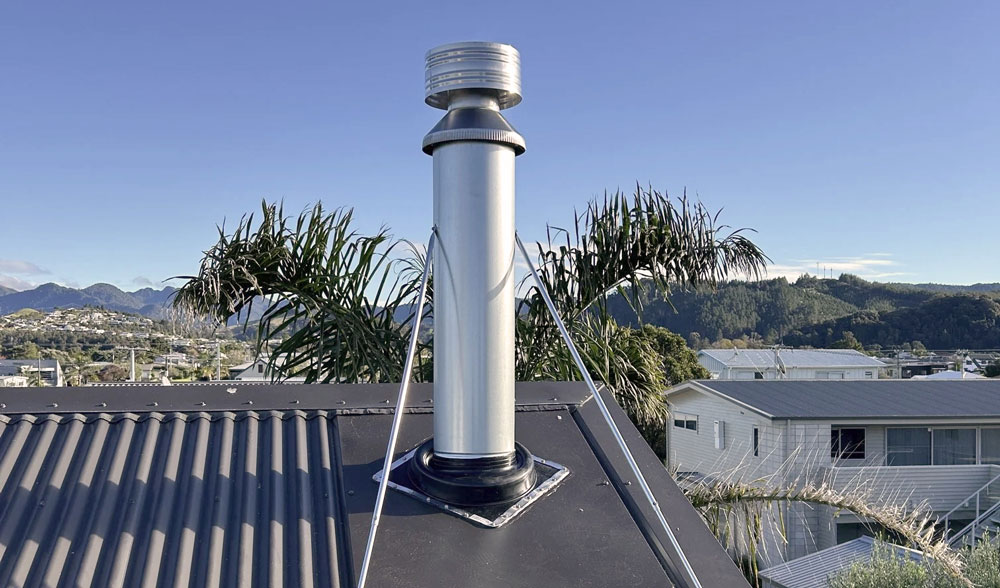
Attached to the fireplace structure inside the house. May be brick masonry or metal flue. Brick chimneys require step flashing up the sides and apron flashing at the base. Metal flue chimneys use a collar flashing; both require explicit specification. A chimney that is present but not included in the scope will create an on-site dispute.
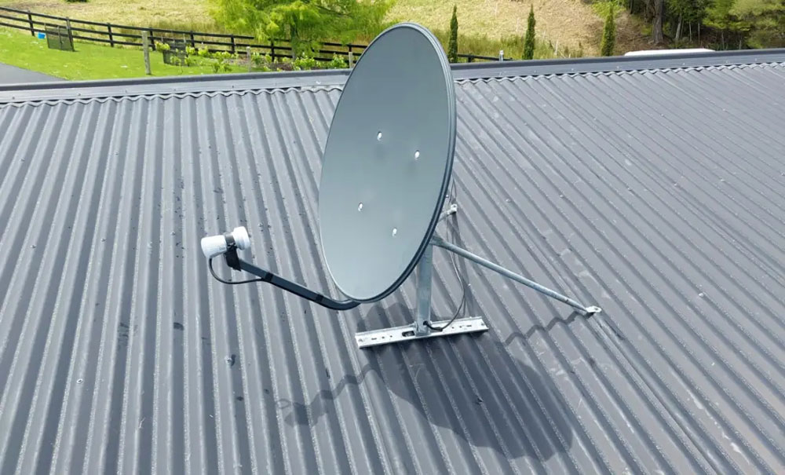
As covered in Chapter 7: the roofer will reposition the dish to access the roof and will reinstall it after the job. Roofbuddy explicitly excludes sky dishes and TV aerials from the scope of work in every specification. The client is told in advance that reception cannot be guaranteed after repositioning and is advised to contact Sky for realignment if needed so don’t deviate from this exclusion.
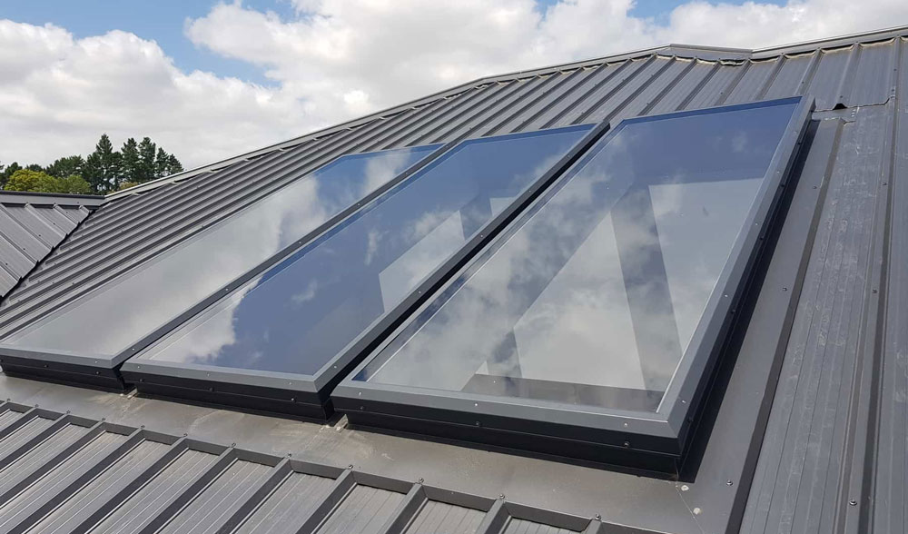
The most complex penetration to specify correctly. Every skylight specification must include the exact Velux model number or equivalent specification, the measured dimensions, photographs of the current installation, a clear statement of what is included (removal, flashing, reinstallation), and a clear statement of what is excluded so do not guess at skylight specifications. Measure and photograph on site; incorrect skylight specification leads to the most expensive on-site variations.
Internal spouting or downpipe penetrations through the roof surface where downpipe connects to internal drainage. Note location and condition.
As described in section 8.3: identified by a bolted connection at the soffit. The sleeving protects electrical cables where they exit the roof structure. Note it in the penetration count and photograph the bolted soffit connection.
Pipe flashing boots already in place from previous roofing work. Where existing dektites are present, assess their condition. Aged rubber splits and loses its seal. Include replacement dektites in the specification unless you have confirmed they are in good condition.
Any other visible penetration.
If you can see it and it goes through the roof, photograph it and note it. This is not a category for judgment calls. If there is something on the roof that you cannot categorise, it goes in the notes with a photograph. The roofer will know what it is. Your job is to make sure it is documented and photographed so they are aware of it when they quote the job.
8.6Asbestos: Knowledge and process.
Asbestos was widely used in New Zealand building materials before 1980. It is predominantly a pre-1980 material risk, though the import of raw blue and brown asbestos was not prohibited until 1984. Any property built before 1984 should be assessed for asbestos potential.
Where you will find it on roofs.
Super 6: Visually identifiable as described in section 8.1. White to grey corrugated cement sheet with a golf-ball dimpled surface. If you see Super 6, asbestos is present.
Decramastic tiles: Asbestos chips were mixed into the surface coating of decramastic tiles produced from the late 1960s through to the mid-1970s. Later versions may not contain asbestos. You cannot make this determination visually. Testing is required.
The testing process.
Testing cost is $80 to $250 depending on the number of samples required.
The laboratory Roofbuddy uses is Focus Analytics, at Unit C1, 4 Pacific Rise, Mount Wellington, Auckland 1060.
Roofbuddy covers the test cost as a sales facilitation tool. Covering the test cost creates goodwill and removes the financial barrier to finding out. Once the test result confirms asbestos, the conversation about removal and replacement is straightforward and the client already has a positive experience of dealing with Roofbuddy.
The removal process.
Asbestos removal is a specialist job requiring a licensed asbestos removal contractor. The process runs sequentially alongside the roofer: one section of the old roof is removed by the asbestos contractor, the roofer immediately follows to install new material on that section, then the process repeats for the next section. This keeps the roof weathertight throughout the job.
Client instructions during asbestos removal.
Clients can remain in the house during an asbestos removal job. They should follow these instructions to minimise any exposure risk:
- Shut and lock all windows.
- Keep all washing inside for the duration of the work.
- Keep all animals inside.
- Turn off all ventilation systems including heat pumps and extractor fans.
- Bring in any outdoor furniture, children’s toys, or items that could collect dust.
Communicate these instructions clearly and in writing before the job begins. Clients who do not know the process may be anxious. Clients who have been briefed are confident.
The encapsulation alternative for commercial properties.
As covered in section 7.1: Guardian Seal can encapsulate asbestos on commercial roofs where removal is not viable. The ten-year renewal cycle creates a recurring revenue relationship. This is a commercial opportunity and a genuine solution for facilities where full asbestos removal would require shutting down business operations.
8.7Gutters, internal gutter conversion, and leaf guards.
Gutter types.
The two primary gutter profiles used in New Zealand residential and commercial roofing are half-round and square-line (fascia gutter). Half-round gutters have been used for over a century and are common on older homes. Square-line or fascia gutters are the current standard for new installations and reroofs, as they attach directly to the fascia board and present a clean line.
Gutter sizing is specified in lineal metres. Downpipes are specified by count; both figures are required for an accurate quote.
Box gutters (internal gutters).
A box gutter is a gutter built into the roof structure itself, concealed within the roofline rather than attached externally. Box gutters were widely used in commercial and some residential construction from the mid-20th century. They are an ongoing maintenance liability because the waterproofing membrane inside the box gutter degrades over time. When it fails, water enters the building structure directly. Repair is difficult because the gutter is internal to the structure; box gutter failure is expensive so they either need to be immaculately maintained and upkept or the client will be up for replacement.
Internal gutter conversion.
The permanent solution to a box gutter problem is conversion to an external gutter system. This involves building out the roofline to accommodate an external gutter, which eliminates the internal waterproofing risk entirely. This is a structural job: a builder must be engaged alongside the roofer. The builder handles the structural element of building out the fascia and soffit. The roofer handles the roofing material and gutter installation. Coordinate these two trades before the job begins.
Gutter protection (leaf guard).
Leaf guard products fit over the top of the gutter and prevent debris from entering. The preferred Roofbuddy supplier is Four Seasons.
The reason Four Seasons is preferred over other brands is a material compatibility issue: some leaf guard products involve contact between two dissimilar metals, which creates a galvanic corrosion cell. Where two dissimilar metals are in electrical contact in the presence of moisture, the less noble metal corrodes preferentially and at an accelerated rate. This can damage both the leaf guard product and the gutter beneath it. Four Seasons product design avoids this contact issue.
Installed cost for gutter protection is approximately $3,500 to $5,000 depending on the total lineal metres of gutter run. When you are on a site with significant tree coverage over the roofline, raise gutter protection as part of the conversation. It is a natural add-on to any gutter replacement or reroof scope.
8.8Cladding types.
Roofing iron applied to walls (cladding) is a real Roofbuddy service. Recognising the existing cladding type on a site visit lets you have an informed conversation when a client mentions exterior work.
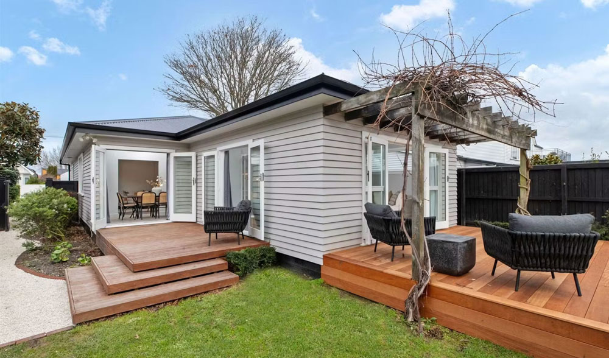
Thin horizontal timber boards overlapped. Thinner than hardiplank. Common on older NZ homes.
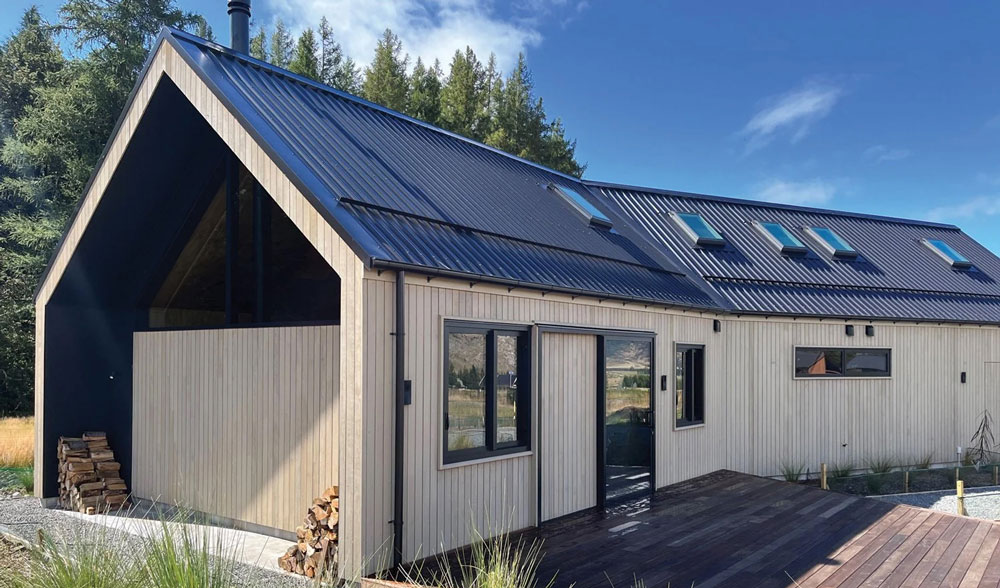
Cedar cladding is the most expensive and most difficult to work with. If you are unsure of the cladding type, default to identifying cedar - it is the hardest case to handle.
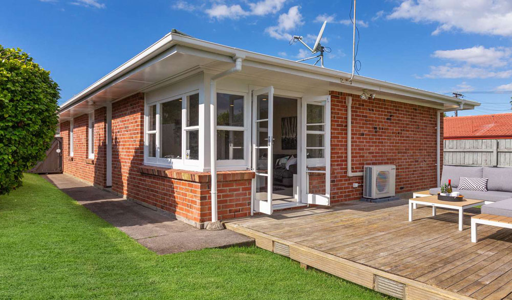
Brick veneer or solid brick. Solid wall, not part of the standard roofing scope but worth identifying for context.
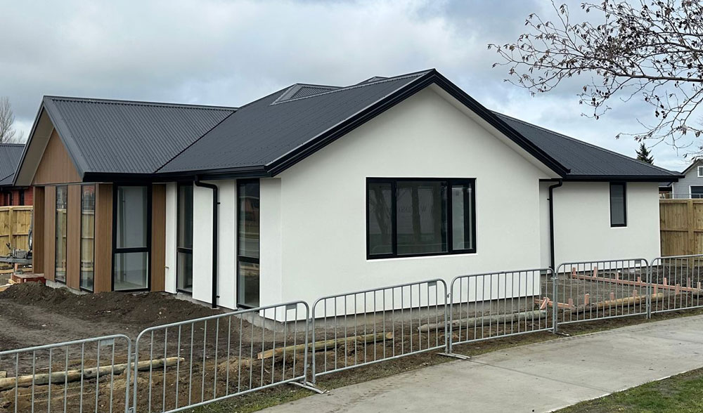
Often used on more contemporary builds. Smooth render finish.
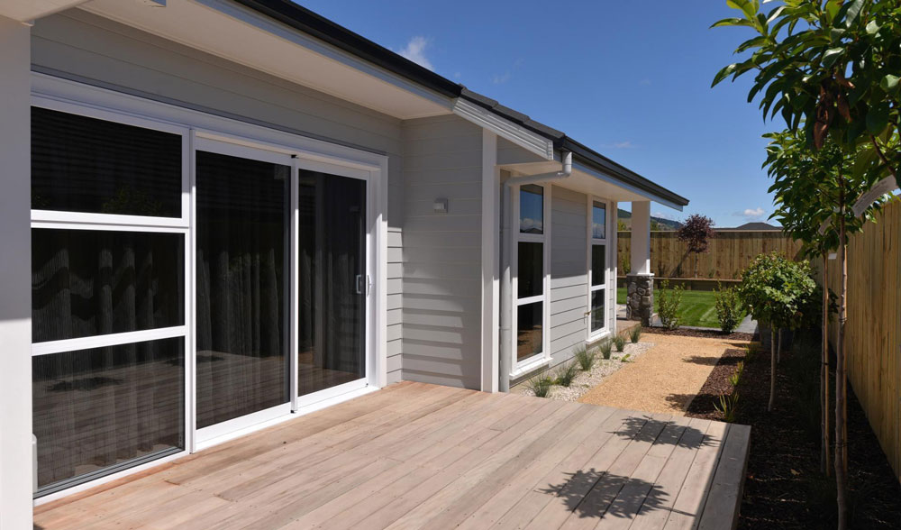
Cement-based weatherboard, thicker than timber weatherboard, common on mid-to-newer NZ homes.
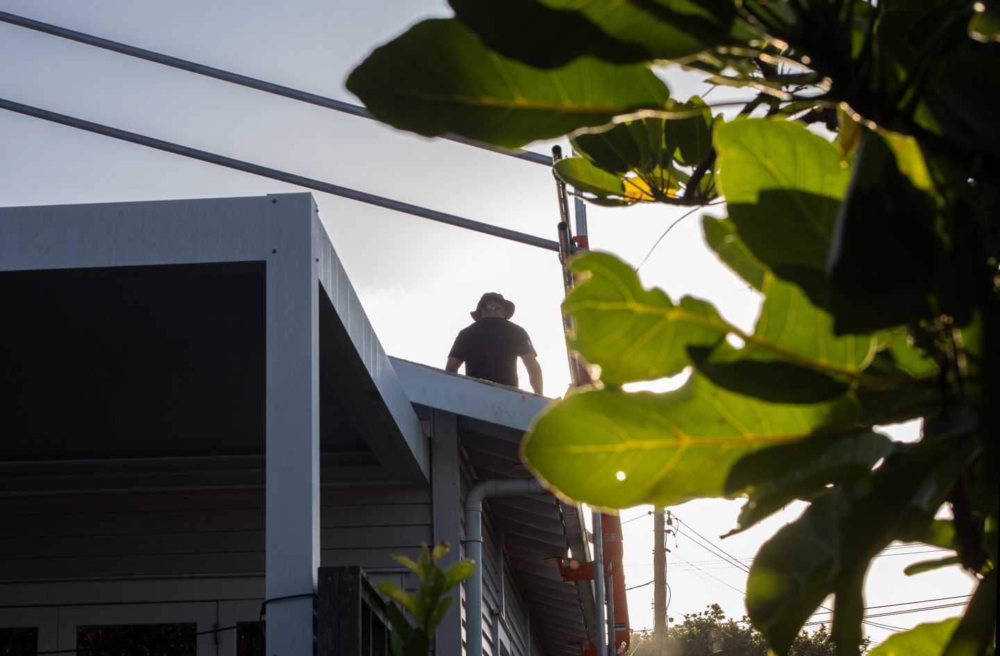
Pipeline management and follow-up.
This is where good consultants and average consultants separate. Appointment quality matters, product knowledge matters, the 5-5-8 framework matters - but the single biggest performance gap between top consultants and middle consultants is not in any of those areas. It is in follow-up discipline.
A consultant who runs an average appointment and follows up every quote 100% of the time will outperform a consultant who runs a brilliant appointment and follows up 30% of the time. The deals you do not close on the day of the appointment are deals that close in the follow-up - if you do the follow-up. If you do not, those deals close with someone else or they never close.
This chapter teaches the system. Use it.
9.1The baseline turnaround standards.
Before the tier system and the follow-up cadence, there are three response-time minima that apply to every lead regardless of quality. These are not aspirational targets - they are the minimum operational expectations of the role, set out in your engagement and tracked at appraisals.
- Contact a new enquiry: within 24 hours of the enquiry landing in the CRM.
- Produce the job spec: within 24 hours of receiving the required information.
- Follow up a quote: within 24 hours of the quote being closed for further quotes.
These three turnarounds are the single biggest competitive advantage Roofbuddy has over friends in the industry. The 10-point comparison in Chapter 7 captures the gap quantitatively - most companies in the industry are quoting at three days to one and a half weeks, with follow-up rates under 10%. The 24-hour standard is what produces the conversion gap.
Beyond these minima, the expectation is that you continue to pursue every sales enquiry until a definitive decision has been made by the client - yes, no, or genuinely paused with a clear reason and a defined follow-up date.
9.2Lead quality tiers.
Not every lead is the same. Roofbuddy uses an A through D tier system to categorise lead quality. Knowing the tier of each lead allows you to allocate your time appropriately but you can never pre judge as there are nuggets of gold hiding everywhere.
A-tier: Ready buyer, qualified, decision-maker present.
Property owner with verified need and timeline within 90 days; budget acknowledged. Decision-maker is the person you will be meeting. These are the leads where you focus your energy at the appointment because the conversion potential is highest. A-tier leads should not languish - they go to the top of the calendar and follow up cadence every time.
B-tier: Warm, qualified, timeline unclear.
Real need and decision-maker engaged. Timeline is further out, often because the client is planning around a specific event (sale, insurance renewal, end of summer). These leads need patient follow-up over a longer period. The Step 9.3 sequence is built for B-tier leads.
C-tier: Needs nurturing, timeline unclear.
Real interest but uncertain timing and may not have full decision-making authority yet. Perhaps doing early research. These leads require longer-term cultivation. The follow-up cadence is less frequent than B-tier but more consistent than D-tier. Many C-tier leads convert to A-tier over six to twelve months if you stay in touch professionally.
D-tier: Information-gathering only.
Leads that do not have genuine purchase intent. Curious and researching or comparing for an unrelated project. These leads are not worth significant time investment but they are not zero either: the next paragraph and section 9.6 cover the specific D-tier sub-types you will see and how to handle each one without burning hours or being dismissive of customer enquiry that may in fact convert.
9.3D-list lead sub-types: What you will see and how to handle each.
D-list leads are not a single thing. They come in recognisable forms, each with a different posture. Triage them at the qualifying call and apply the correct handling. The wrong move with a D-list lead is either to write them off entirely (you miss the small percentage that have hidden value) or to over-invest in them (you burn time you should be spending on A and B-tier work). Calibrated handling is what protects your time and still captures upside.
D-list sub-type 1: Gutter only.
Client wants a quote on gutter replacement, nothing else. Often a small dollar value job. Do not refuse it. Take the quote, but qualify quickly: is there a roof job behind this that should be considered together? Sometimes gutter degradation indicates broader roof issues. Sometimes it does not. If it is genuinely just gutter, deliver a clean quote, deliver it efficiently and move on. A clean small job done well builds a relationship for the next decision - five years from now this client may come back for the reroof.
D-list sub-type 2: Building inspection.
Client wants a roof condition report, often as part of a wider building inspection commissioned by a buyer or for an insurance assessment. Be clear with the client upfront about what they are buying and what they are not: this is a condition report, not a quote. Some of these clients will move on to actual roofing work later so these reports are solid gold. Treat the report as the product and price it accordingly, this is valuable information and insight they are purchasing.
D-list sub-type 3: Buying a house.
Client is considering a property purchase and wants pricing on the roof as part of their negotiation. Key question to ask: what stage of the purchase are they at? If they have not made an offer yet, give them an indicative price range - not a formal quote - so they can factor roofing into their offer. If they have an offer accepted, they will likely use the quote as a negotiating lever with the vendor (current owner) to either reduce the purchase price or have the repairs done before settlement. Either path is legitimate. The roofing work itself may not happen for months and may go to a different consultant if the property is in another region, so calibrate your time investment. Document carefully and refer to the appropriate region if needed.
D-list sub-type 4: Selling a house.
Client is the vendor preparing a property for sale. They want a roof quote as ammunition for negotiation with potential buyers, or to have work done before listing. Selling-side D-list leads sometimes convert quickly because the seller has a hard timeline (listing date or sale date) and wants the work completed or quoted before then. Ask directly: are you planning to do the work before sale, or use the quote in negotiation? If they want to do the work, they are effectively an A-tier or B-tier lead with a real timeline. If they want the quote for negotiation, manage your time accordingly.
D-list sub-type 5: New roof, just thinking about it.
Client is exploring the idea of replacing their roof but has no firm timeline or trigger event. They are early in the consideration process. These leads need the longest cultivation period. The right move is a professional, well-pitched appointment that establishes you as the trusted advisor when the timeline does firm up, plus a long-cadence follow-up sequence that keeps you visible without becoming a nuisance. Some of these clients convert in six months. Some in two years. Some never. Stay in their feed gently and prioritise the leads with firmer timelines for your immediate energy.
9.4The 4-step follow-up sequence.
This is the proven follow-up cadence for B-tier and warm C-tier leads. It is structured because structure produces consistency. You do not need to invent the right moment to follow up - the cadence tells you when.
Step 1: Day-of follow-up (or next day).
Within 24 hours of the appointment, send a recap. Key points discussed, the scope of the quote, the next steps. This step locks the client into the process while the appointment is still fresh in their memory. A consultant who sends the recap email the same evening is signalling professionalism. A consultant who lets a week pass is signalling indifference.
Step 2: Quote delivery follow-up (3 to 5 days after quote sent).
Once the quotes are in the client’s hands, follow up to walk through them. Many clients will read the quotes without fully understanding them and then go silent because they are unsure how to compare. A brief call where you explain the differences across the quotes brings them back into the process. “Have you had a chance to look through the quotes? Happy to walk through any of them with you.” That is the entire script.
Step 3: Decision support (7 to 10 days after quote sent).
If no decision has been made by this point, the client is hesitating on something so find out what it is. Most hesitation falls into one of three buckets: price (they think it is too expensive), timing (they want to wait), or trust (they are not sure about Roofbuddy or the specific roofer). Each of these has a different conversation, and Chapter 4 (Impulses) and Chapter 3 (Closes) give you the tools. Identify the bucket and address it directly.
Step 4: Long-term cadence (every 30 to 60 days thereafter).
If a deal does not close in the first three steps, it moves to long-cadence follow-up. A brief professional touchpoint every 30 to 60 days keeps you in mind. “Just checking in on the roof project - anything I can help with?” Some of these conversations reopen months later. Some never. The discipline is to maintain the cadence consistently without becoming a pest. The goal is to be the obvious first call when the timing does become right.
9.5Network discipline: How we protect your pipeline.
You are working a pipeline that depends on the quality of the roofers Roofbuddy puts you in front of. If those roofers underperform, your deals fail at install and your clients leave bad reviews. Pipeline integrity depends on roofer integrity and Roofbuddy maintains the latter, deliberately, on your behalf.
How roofers are vetted.
Every roofer in the marketplace has been checked for the following before they ever receive a lead:
- LBP (Licensed Building Practitioner) certification, valid and current.
- Public liability insurance, current certificate held on file. Annual renewal verified.
- Solvency check - the business is not failing under the weight of bad receivables or growing debt that suggests payment risk.
- Track record and reference work.
- Two-year minimum trading history, or five years minimum industry experience.
The vetting is not just a one-time check, it is ongoing. We monitor each roofer’s performance through the platform: quote turnaround speed, communication quality with clients, completion rates, time from deposit to install, post-install QA results, customer reviews. A roofer who passes onboarding but underperforms in any of these areas gets flagged.
The cautionary case - what happens when a client goes around the network.
This story underscores why the discipline matters. A roofer in the Roofbuddy network had completed 25 jobs for us over an extended period and the work was good. But over recent months his communication had become inconsistent and his lead times had stretched out significantly - both of which are early warning signs that a business is struggling under load.
We acted on those signs and stopped sending him new jobs. We did not announce this publicly; it was an internal discipline decision. From the network’s perspective, he was being held back from new work until his service levels recovered.
A client we had previously connected to this roofer chose to deal with him directly outside Roofbuddy. The roofer took a 50% deposit and The job was never started. The client lost the deposit and was left without a roof.
That story has two lessons. First: it is the reason your clients should not be encouraged to deal direct with roofers outside the platform, the platform’s discipline is the protection. Without it, the client is dealing with a counterparty whose performance is no longer being monitored. Second: when a client asks why they cannot just “go around” Roofbuddy to save the fee, this is the story that answers them. The fee is paying for the vetting, the monitoring, the warranty, and the protection. The outcome above is what happens when those protections are removed.
How this protects you operationally.
If a roofer in your pipeline starts showing the warning signs (communication slipping, lead times stretching, deposit-to-install delays growing), flag it to leadership early. The faster the network responds, the smaller the damage to your active pipeline. Your active deals get rerouted to reliable roofers; the underperformer gets paused while their service recovers or, if it does not, cut entirely.
This is also why the Customer Warranty up to $50,000 is not theoretical. It exists for the moments when network discipline catches a problem too late, as in the Laken Wahene case. The two systems - proactive vetting and reactive warranty - work together. You do not have to choose between them.
9.6Self-generated leads - “Self-gens”.
A self-generated lead is any opportunity you bring into the company yourself that did not come through the marketing-generated lead pipeline. They are called “self-gens” internally - pure margin, no acquisition cost, and they tend to be exceptionally high-quality clients who convert at a much higher rate than inbound leads.
Every senior consultant in this company has a self-gen story and most have dozens. The pattern is consistent: a casual conversation, a favour for someone, a small interaction that turned into a sale, which turned into a referral, which turned into a string of jobs over years.
Self-gens are not a side activity, they are a core part of building a sustainable consultant career. Read this section carefully and start applying it from your first week.
The mindset: Dig for the gold.
The first principle is that you cannot prejudge where a self-gen will come from. The phone calls and conversations that look low-quality on the surface are often the ones that turn into the biggest jobs. A homeowner who rings asking a vague question about their roof, with no apparent budget or timeline, may be the brother-in-law of someone who is about to commission $250,000 of commercial roofing work; you will not know until you have engaged.
The internal phrase: dig for the gold. Treat every conversation as potentially valuable. Be generous with your time on low-stakes interactions. The return on that generosity, played out over years, is enormous.
Scope creep is your friend.
In most sales environments, scope creep is what you try to avoid. In Roofbuddy self-generation, scope creep is what you encourage. The roofing lead that turns into a re-cladding job, the gutter inquiry that turns into a full reroof, the conversation about a leak that becomes a discussion about painting the exterior - each one is a self-gen. The original lead came from Roofbuddy marketing, the additional work did not; That is bona fide self-gen territory.
Worked example: a senior consultant was visiting a client for a roof job. During the appointment the client mentioned they were planning exterior painting. The consultant asked the right questions, kept the conversation open, and ended up quoting $25,000 of additional painting and cladding work - none of which Roofbuddy had marketed for. That is a textbook self-gen, the marketing did not generate the second job; the consultant did.
Another worked example, the Tradewinds case: a senior consultant ended up working with a Tradewinds-style commercial client whose original engagement was for a $60,000 roof. Over the course of the relationship the same client commissioned multiple further jobs - eventually exceeding $170,000 in additional roofing work, plus other related scope. The first job came through the platform. Everything that followed came from the consultant maintaining the relationship and being there when the next job came up; that is what a self-gen relationship looks like across time.
Helping without immediate payment: The long game.
Some of the highest-value self-gens start as conversations where you provide help without expecting anything in return. The Otahu church story is the best illustration in the company’s training history.
A consultant spent five or ten minutes on the phone with a homeowner who had a roofing question. The conversation did not produce a spec, a quote, or any obvious commercial outcome. From a metrics perspective it was unproductive time. But the consultant was patient, helpful, and gave the caller useful guidance.
Several weeks later, the homeowner’s brother-in-law called. He had heard about the consultant from his brother-in-law and wanted to talk about a roofing job. That brother-in-law turned into two roofs in the first month, including significant asbestos removal work, and a third roof bought the morning of the next sales meeting. All from the original five-minute phone call that produced nothing on the day.
The lesson: the calls that look low-value on the day are often the seeds of much larger relationships. The clients you help generously remember you then they tell people and come back. The pipeline that helping builds is invisible at first and then suddenly very visible. Be the consultant who is generous with their time on low-stakes conversations as the compounding returns are real. Pre judge a lead at your peril, you never know who has money to spend.
Where self-gens most often come from in practice.
Three sources account for most self-gens in the Roofbuddy network:
- Existing clients. Once you have delivered well on a job, the same client comes back for additional work (gutter, cladding, painting, other property) or refers you to their network. This is the largest source by volume.
- Centres of influence. Real estate agents, property managers, building inspectors, mortgage brokers, asbestos specialists, painters, builders. Each of these professionals encounters roofing situations regularly. Being the person they call when a roofing question comes up generates a steady, low-effort lead stream over time.
- Casual conversations. The neighbour at the school gate, the friend at the rugby club, the conversation at a wedding. The volume here is lower but the conversion is high because there is already a trust relationship.
How to build self-gen flow as a discipline.
Be findable, have business cards. Use your email signature and be active in your local networks. Self-gens do not arrive from people who have forgotten you exist.
Stay in touch with delivered clients, a quick follow-up call six months after install asking how the roof is performing produces two outcomes: it strengthens the relationship and it often surfaces secondary work (a leak somewhere unrelated, a gutter problem, a friend who asked them for a recommendation).
Invest in centres of influence proactively; take a real estate agent for coffee. Talk to a property manager about the kinds of conditions they encounter on their managed portfolio. Be helpful when those people ask a question, even if no immediate sale is in it.
Take the conversations you do not have to take. The five-minute phone call you could have brushed off may be the call that produces $250,000 of work over the next two years and you will not know in advance which call that is. Treat them all as potentially valuable.
The Otahu church lead looked low-quality but it became one of the highest-value relationships any Roofbuddy consultant has built; that is the model.
The consultants who build great careers at Roofbuddy do not think week to week, they think year to year. The pipeline they are building this month is for the closes coming in three months. The relationships they are seeding now are for the self-gens coming in a year. The reputation they are building today is for the referrals coming in two years. This is a long game played one good appointment at a time - the thirty minutes you spent helping a low-stakes caller, the four hours you invested in a property manager relationship that produced nothing on the day, the careful follow-up sequence on a client who eventually said no - none of it is wasted. It is the soil in which the next two years of work grows.
9.7CRM hygiene and quote diary management.
All of the above breaks down if the CRM is not clean. Notes have to be current. Statuses have to be accurate. Follow-up dates have to be in the diary. A pipeline that lives in your head is a pipeline that loses deals. A pipeline in the CRM that everyone can see is a pipeline that holds.
Standard expectation: before you leave the office at the end of the day, every lead you have touched today has updated notes in the CRM and a clear next-action date. Tomorrow morning, your first activity is reviewing the quote diary for follow-ups due today. Hit them in priority order then move to today’s appointments.
A clean CRM is also what enables senior leadership to support you. When James or Finn looks at your pipeline, they can see what is moving and where you might be stuck. A pipeline they cannot see is a pipeline they cannot help with.
9.8Review management - 5-star principle.
Reviews are part of the pipeline whether you think of them that way or not. Every client who has a great experience becomes a future referral source and a public credibility point. Every client who has a poor experience becomes a Google review that erodes the credibility of every consultant in the company.
The current Google review base sits at around 433 reviews at 4.7 stars, that is not a vanity metric. It is one of the most powerful credibility tools you have on a new appointment. When a client says “how do we know you’re legitimate?”, the review base is the public, verifiable, hard-to-fake proof so use it; this is Jones Theory in action.
The discipline runs in two directions. First, actively ask satisfied clients for a Google review at the end of the job. Many of them will be happy to leave one and just need to be asked. Second, the more important direction: do everything you can to prevent one-star reviews. A single one-star review carries far more weight than a five-star review in the mind of the next prospective client. Dodge one-star reviews. That phrase, dodging one-star reviews, is the operating instruction.
How you dodge them: do not leave clients in the dark or promise things you cannot deliver. Do not be defensive when something goes wrong - be the person who solves it. If a job has gone sideways, your job is to make the client feel heard, find the path back to a good outcome, and ensure the QA and warranty processes are activated. A client who feels supported through a problem often leaves a five-star review specifically because of how the problem was handled; where A client who feels abandoned mid-problem is where one-star reviews come from.
Technology and tools.
Roofbuddy is a tech-enabled service business. The tools you use every day matter - they determine your speed, your accuracy, and how professional you look in front of a client. This chapter walks through the core stack.
10.1The CRM.
The Roofbuddy CRM is the central operational system. Every lead, every quote, every appointment, every interaction with a client and a roofer lives in there. Get fluent with it in your first two weeks.
Core CRM functions you will use daily: lead intake and triage, appointment scheduling, quote management, status updates, follow-up tracking, photo and document storage, and the quote diary. Train on each one. If something is not behaving the way you expect, ask a colleague or the support team rather than improvising - a workaround in the CRM is usually a sign that something else is going wrong.
Save the CRM, the Roofbuddy site, Nearmap, Property Value, Google Maps, and the basemaps LINZ tool to your Chrome favourites on day one.
10.2Aerial measurement.
Aerial measurement tools - Nearmap as the primary, with Google Maps and LINZ basemaps as backups - allow you to scope much of the spec work before you set foot on the property. This saves time and improves accuracy. The clients you see at appointments expect you to know their roof in detail when you arrive.
The discipline: measure soffit to soffit, not wall to wall. Wall to wall overstates the area because it includes the wall framing thickness on both sides. Soffit to soffit measures the actual area the iron will cover. This is one of the most common measurement errors and one of the easiest to fix once you are aware of it.
For each measured section, record: lineal metres, square metres, pitch, and a clear identifying label (front face, rear face, dormer, garage). The spec the roofer receives must be unambiguous.
The tools you use every day matter - they determine your speed, your accuracy, and how professional you look in front of a client.
10.3Drone protocol.
Drones are part of the Roofbuddy toolkit and they materially change the quality of pre-visit information. Used correctly, a drone produces photographs and measurements that a tape measure and a ladder cannot. Drone usage at Roofbuddy follows a strict protocol. Flying a drone in residential areas without consent creates legal exposure. The protocol is non-negotiable. Drone operation is governed by Civil Aviation Authority rules. CAA Part 101 covers the general operation rules; Part 102 covers certified operators.
Before the flight.
Obtain verbal client consent before flying. Confirm the property boundary so the flight path does not stray over neighbouring property.
Check the no-fly conditions: weather (no flight in high winds or rain), airspace (CAA controlled airspace check), powerlines, trees, and any other obstruction risk. If conditions are not safe, the flight does not happen.
During the flight.
Keep the drone in line of sight at all times. Maintain altitude appropriate to the property. Capture the four cardinal angle shots, the roof plane shots for each face, close-ups of any visible damage, gutter condition shots, and penetration documentation. The goal is a complete visual record that a remote roofer could use to quote accurately.
After the flight.
Upload all images to the CRM against the lead immediately. They belong with the lead so the spec, quotes, and client communications can reference them.
If you are unsure about any of the legal or operational requirements, talk to Chris before flying. There is no penalty for asking but there are significant concequences for getting it wrong.
10.4Other tools in the stack.
Property Value.
Used for property history, ownership confirmation, and pricing context. Particularly useful when a client is buying or selling and the price of the property is part of the decision context for the roof.
Slack.
The internal communication tool. Sales team channels, leadership channels, and specialist channels (asbestos, scaffolding, finance, escalations). Be active in the channels relevant to you. The team learns from each other through Slack and the consultant who is not present in those conversations misses a lot.
Gmail with shared templates.
All client and roofer communication runs through Gmail with a library of approved templates. Use the templates. They are written for a reason and they have been tested. Do not improvise the language unless you have a specific reason to.
Google Calendar.
Your appointment schedule. The CRM pushes appointments into Google Calendar, but if you change something in Google Calendar it does not push back to the CRM. Update the CRM first; let it propagate to your calendar.
WhatsApp.
Used as the sales team’s fast communication channel. Slack is the formal record; WhatsApp is the quick check-in. Both have their place.
Time management and daily structure.
Sales is a high-autonomy role where nobody will check your calendar minute by minute. That freedom is a gift and a trap; the consultants who run a disciplined daily structure outperform the consultants who let their day shape itself.
11.1The fixed rhythm: Sales meetings.
Two fixed points anchor the week. Sales meetings are held every Tuesday and Thursday morning at 11:30am sharp, running for 60 minutes and on time attendance is expected. These meetings cover technical knowledge, sales acumen, motivation, administration, and personal development. They are where the team learns from each other and where leadership coaches the field on what is working and what is not.
Arrange your appointment schedule around these meetings, not the other way around. If you genuinely cannot attend, a phone call to let Chris or Finn know as soon as you are aware. The hour this meeting occupies is the highest-leverage learning time available to you in the week. The consultants who skip it consistently underperform the consultants who treat it as non-negotiable.
11.2The daily structure.
A productive day in this role looks roughly like:
Before 7am: Plan the day. Review the quote diary, identify the priority follow-ups, confirm appointments. This is 15 to 30 minutes of structured thought. The day runs much better when it has been thought through.
7am to 11am: Outbound activity. Phone follow-ups, decision-support calls, lead qualification, appointment scheduling. The high-leverage block.
11am to 1pm: Quote production and prep for afternoon appointments. Review each appointment’s lead, set the mental frame for who you are about to meet, double-check the sales kit.
1pm to 6pm: Appointments. Site visits, presentations, closes. The output block.
6pm onward: End-of-day CRM hygiene. Notes from today’s appointments updated. Statuses changed. Next-action dates set. Tomorrow’s plan started.
This is a guideline, not a rigid template. The principle is that each part of the day has a primary purpose and a secondary purpose, and you align your activity to the highest-value work available in that block.
11.3Protecting the pipeline from your own habits.
Three patterns kill pipelines. Recognise them in yourself.
Avoidance. The follow-up call you do not want to make because you suspect the answer will be no. Make it anyway, the no liberates you to focus elsewhere. The unmade call sits in your head and clogs your decision-making for weeks.
Drift. The hour that disappeared into email, Slack, and reformatting a quote that was already fine. Every hour you spend on low-leverage work is an hour you did not spend on the phone or in front of a client.
Overthinking. The quote you revised four times before sending. The follow-up message you redrafted five times. Done is better than perfect for routine communications, save your craft for the high-stakes moments.
The single most useful self-audit question, asked at 3pm: “Am I doing the highest-value work available to me right now?” If the answer is no, change activity.
11.4Professional image and dress code.
You are the face of the company on every site visit and in every office interaction. The impression you create is the impression Roofbuddy creates so the dress code reflects this.
In the office.
Clean, smart-casual. Branded Roofbuddy shirt or polo when stocks are available. Closed-toe shoes. Tidy hair, presentable grooming. You are not in a corporate office and the dress code is not about formality - it is about looking like someone the team and the founders would be comfortable sending to a $50,000 client appointment.
On site.
Branded shirt. Trousers or smart shorts (depending on season). Closed-toe shoes - on a roof inspection you need actual footwear. Have a clean vehicle. Carry yourself with the calm professional confidence the role requires.
These are not vanity items, they are operational standards. A consultant who arrives looking sharp signals competence and attention to detail. A consultant who arrives looking dishevelled signals the opposite, regardless of how good their technical knowledge is.
The branded shirts and basic kit are provided by the company. Keep them in the car between appointments so you can refresh as needed. The kit is there for a reason - you keep them in the car so you can refresh between appointments. Use them.
11.5Support team and delegation.
Consultants are supported by the Sales Support Team (SST) based in the Philippines. The SST handles lead intake, qualification calls, scheduling, CRM updates, and a range of administrative tasks that would otherwise consume consultant time.
Use the SST effectively. Delegate the administrative work. Focus your time on the activities only you can do: appointments, decision-support calls, closes, relationship-building. The consultant who tries to do everything themselves runs a smaller pipeline than the consultant who delegates well. The SST is a leverage tool, not a back-up plan.
Be clear and respectful in your SST interactions. They are colleagues, not assistants. The quality of work you get back is correlated with the quality of brief you put in. If something is going wrong with SST handoff, raise it through the support escalation route - do not let it fester in a Slack DM or quietly accept work that is missing the mark. The team’s effectiveness depends on the handoff working in both directions.
Learning outcomes and self-assessment.
This manual is not designed to be read once. It is a working reference for the first 90 days of your role at Roofbuddy and an ongoing diagnostic tool whenever an appointment does not go the way you wanted. This final chapter gives you the framework for self-assessment, the progression milestones for your first three months, and the role-play scenarios that prepare you for the situations you will actually encounter in the field.
12.1Self-assessment rubric.
Score yourself honestly against the following dimensions. 1 means you are still learning the basics; 5 means you operate consistently at a senior level. Score yourself at the end of weeks 2, 6, and 12. The dimensions where you score lowest are the dimensions to focus on next.
- Pre-appointment preparation: lead review, mental frame, sales kit ready, punctuality.
- The Introduction: rapport, presence, professional composure.
- The Presentation: spin questioning, identifying client need, building value through the five words.
- The Short Story: deploying the right story for the moment, connecting back to the client.
- The Close: minor closes throughout, indifference posture, assumptive close at the moment.
- The Rehash: confirming, locking in, leaving the client confident.
- Impulse Deployment: knowing which impulse is right for which moment.
- DISC Reading: identifying the client type in the first five minutes and adapting.
- Product Knowledge: speaking accurately about Guardian Seal, Guardian Seal Pro, Guardian Steel, Em-One.
- Roofing Domain Knowledge: identifying material, shape, components, penetrations correctly.
- Pipeline discipline: timely follow-up, accurate notes, no leads slipping through gaps.
- Self-Generation: building relationships that produce self-gens over time.
- Time Management: a structured day with the right activity in the right block.
- Mindset and Resilience: maintaining attitude through difficulty.
12.230-day milestones.
By the end of 30 days you should have:
- Read every chapter of this manual and self-assessed your score on each dimension above.
- No chapter scoring below 3 on the self-assessment.
- Shadowed a minimum of five appointments with a senior consultant and debriefed after each one.
- Run at least three appointments yourself, with a senior consultant present or with a same-day debrief.
- Cleared the CRM orientation with the support team and be operationally fluent in the system.
- Met or had a 1:1 with each member of the leadership team and your sales team peers.
12.360-day milestones.
By the end of 60 days you should have:
- Run a minimum of 20 appointments yourself.
- Closed your first deals.
- Self-assessment scores moving consistently upward across all dimensions.
- A clear written goal for your first 12 months and a working plan to hit it.
- At least one self-generated lead in the pipeline.
- Active relationships with at least two centres of influence (real estate agents, property managers, builders, asbestos specialists, painters).
12.490-day milestones.
By the end of 90 days you should be:
- Operating independently with appointment quality and pipeline discipline matching the senior consultants.
- Closing at a consistent rate.
- Generating self-gens regularly through your existing client and referral relationships.
- Looking past the current quarter to a 12-month and 24-month career trajectory.
- Comfortable with every product in the range and every roofing domain concept in this manual.
- A contributor to team learning rather than only a consumer of it.
If your trajectory is not on this timeline by the end of 90 days, talk to leadership. The expected curve is steep but achievable, and the team is built to support consultants who are working hard. Help is available; ask for it.
12.5Role-play scenarios.
Practise these scenarios with a training partner or speak through your response aloud. Reading them in your head is not the same as saying it out loud. Your brain will fill in gaps silently that your mouth will stumble over.
Scenario 1: The D-type who wants to get it done.
The client opens the door, glances at their watch, and says “You’ve got 20 minutes.” How do you adapt? Walk through the specific changes you make to your pace, your presentation, your minor close frequency, and your close approach. What do you cut? What do you keep? What signals tell you the appointment is going well?
Scenario 2: The C-type who has done the research.
The client has printed three competitor quotes and a comparison spreadsheet. They want to understand specifically why your roofers are better than the alternatives they have already identified. How do you engage with their research without being defensive? What specific Roofbuddy differentiators do you lead with? How do you move from data comparison to trust building?
Scenario 3: The S-type who is worried about disruption.
The client’s first question is “How long will they be on the roof?” The second is “Will they need to come inside?” Walk through your approach to providing genuine reassurance without overpromising on timelines. How do you build enough safety that the client stops focusing on disruption and starts engaging with the outcome?
Scenario 4: The I-type with too many people in the room.
The client has invited their adult daughter and a neighbour to the appointment. The daughter has opinions and is not shy about sharing them. How do you manage the room? Who do you address? How do you handle a question from the daughter that conflicts with what the client said earlier? What is your close approach when there are multiple people with influence?
Scenario 5: The December close.
The client is on the fence. They like the proposal but are not ready to commit. Walk through a full stacked-impulse close that incorporates Jones, Sense of Urgency, Greed, Fear of Loss, and Indifference in a natural conversational sequence. The close should feel like a conversation, not a checklist.
Scenario 6: The leak objection on Guardian Seal.
The client says “I’ve been told membrane won’t fix my leak.” How do you respond without overpromising on the product’s capabilities? What questions do you ask to understand where that belief came from? How do you re-establish confidence in the product without making a claim you cannot back up?
Scenario 7: The Buddy Pay close.
The client likes the proposal but is hesitant about the cash outlay. Walk through how you introduce Buddy Pay, how you present the three term options, and how you handle the inevitable “what’s the cash discount” question. The close should leave the client choosing between paying cash and taking finance, not between buying and not buying.
Scenario 8: The self-generated opportunity.
During a routine reroof appointment, the client mentions in passing that they are also looking at exterior painting and have not yet engaged anyone for it. How do you handle that mention? What questions do you ask? How do you keep the original reroof conversation on track while opening a second conversation about the painting work? What is your follow-up approach after the appointment?